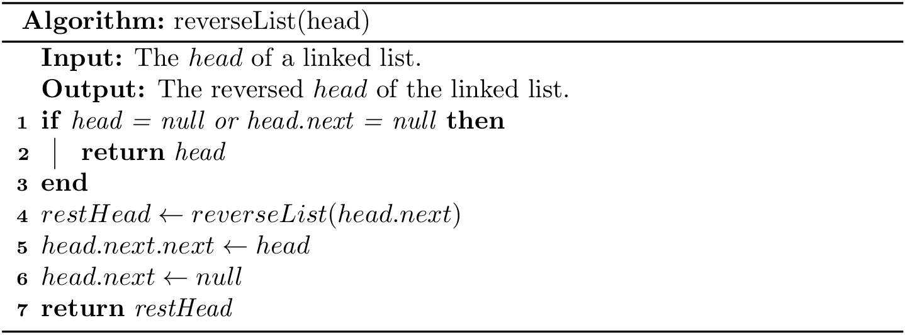
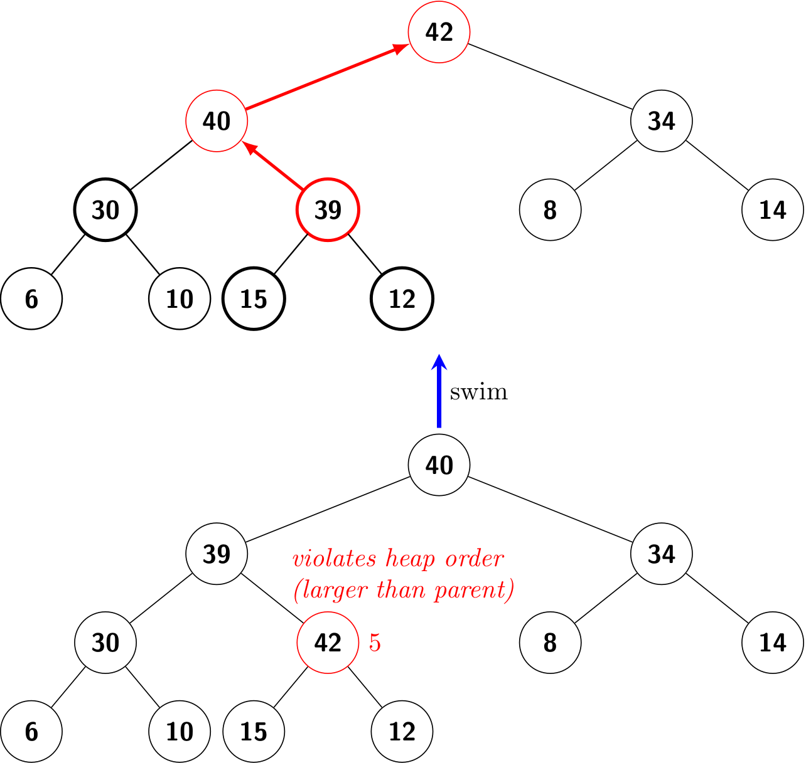
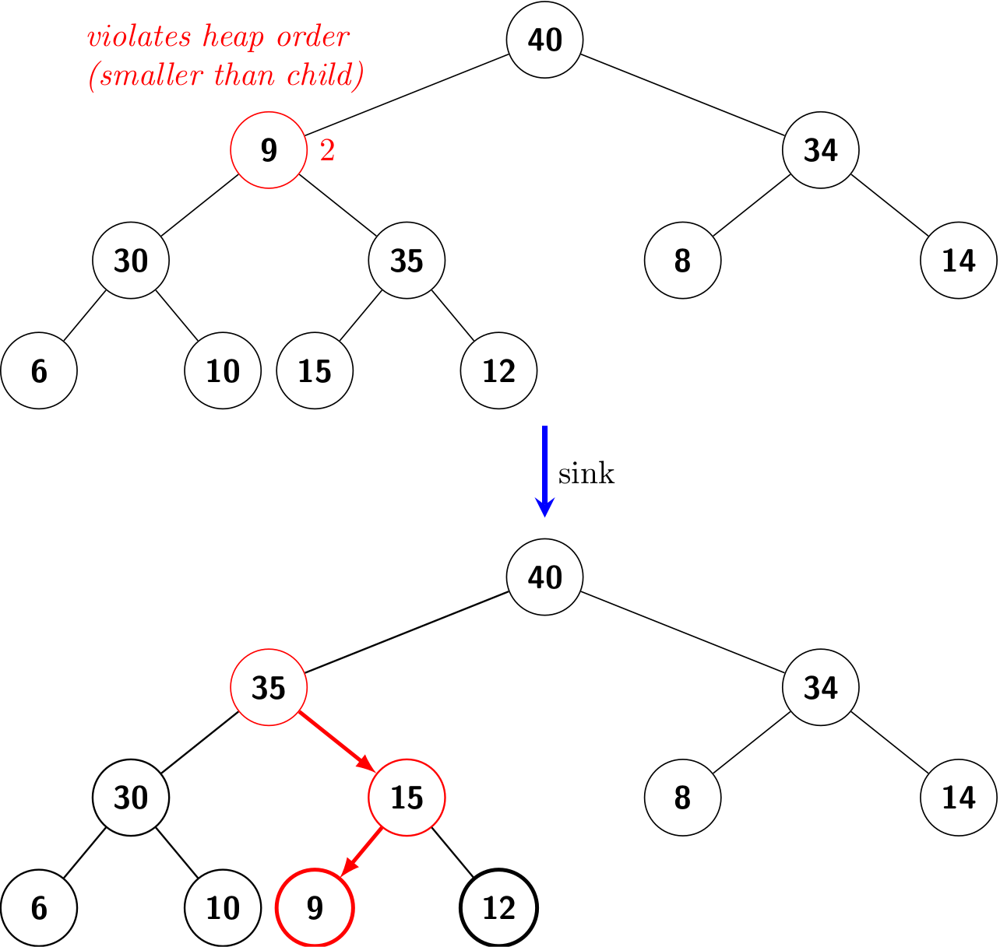
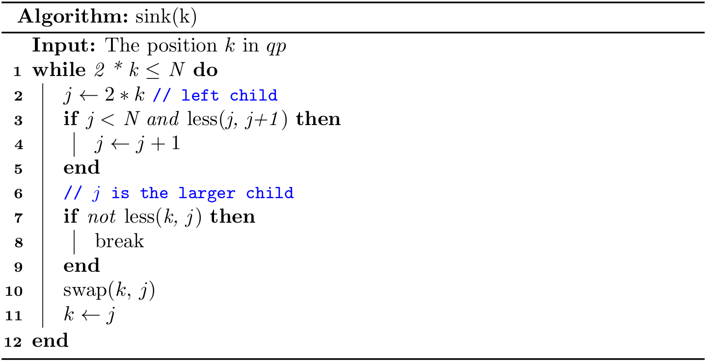

Preface
Welcome to Hands On Data Structures! Basically, data structures are the cornerstone in computer science as all operations in computer are virtually to manipulate data efficiently.
So, what is a data structure exactly? Wikipedia offers a working definition:
In computer science, a data structure is a data organization, management, and storage format that is usually chosen for efficient access to data.
Suppose you are a librarian and there are more than 10 thousand books. Then how to organize and manage those books is of importance to you, because readers expects they are able to find the book they love efficiently. Nobody wants a mess!
In this book, you will learn to organize/manage those data (e.g., books) by designing efficient data structures. Let's stick to the analogy of being a librarian. As we can see, how to fetch/add/remove books is also an essential part of your daily work. In computer science, it is called algorithms, which describes how to do something step by step in computers. Furthermore, we can obtain such interesting equation1:
\[ Programs = Data\ Structures + Algorithms \]
It is obvious that data structures and algorithms are highly inherently relevant with each other. Without data structures, it is unlikely to design efficient algorithms. To some extent, algorithms can be regarded the application of data structures. However, a thorough introduction to algorithms, mainly including algorithms design and analysis, is out of the scope of this book. As a result, we focus on some basic data structures, and only a handful of parts are dedicated to pure algorithms.
Note that there are many awesome books available about data structures and algorithms, and this book is just a follower of them. Just to name a few:
- Introduction to Algorithms by Thomas H. Cormen, Charles E. Leiserson, Ronald L. Rivest, and Clifford Stein. It is known as CLRS.
- Algorithms by Robert Sedgewick, Kevin Wayne.
- Data Structures & Algorithms in Java by Michael T. Goodrich, Roberto Tamassia, Michael H. Goldwasser.
- Data Structures & Algorithms in Python by Michael T. Goodrich, Roberto Tamassia, Michael H. Goldwasser.
- Data Structures and Algorithm Analysis in Java by Mark A. Weiss.
It is highly recommended reading those masterpieces (especially CLRS and Algorithms) if you want to have an in-depth understanding, for this book is tailored for students in SWUFE by eliminating or simplifying many obscure parts.
The motivation of this book is to help students obtain hands-on skills in terms of data structures by putting emphasis on coding and programming itself. It is also worthwhile to note that data structures are not limited to some specific programming languages. In this book, we will focus on the object-oriented way, and cover the implementations in both Java and Python.
1 Algorithms + Data Structures = Programs is a 1976 book written by Niklaus Wirth covering some of fundamental topics of computer programming, particularly that algorithms and data structures are inherently related.
Fundamentals
In this chapter, we will take a quick glance at data structures.
Introduction
Let's continue to use the analogy of being a librarian, so you have to design an efficient way to manage the large amount of books. Suppose we need only to care about the names of books, we can use an array in Java or a list in Python:
String[] books = {"Gone with the Wind", "Hands on Data Structures"};
books = ["Gone with the Wind", "Hands on Data Structures"]
But, the capabilities of different data structures vary considerably. For example, an array in most programming languages is in a fixed size. To put it another way, you cannot add or remove any item in it, and this feature is ridiculous for a general library management system.
Given the pitfall of an array, can we always prefer to a list? The answer is NO! Because trade-offs are ubiquitous in computer science, different data structures have their own pros and cons, and we should choose an appropriate data structure by considering the specific context. As for an array, it is the best due to its efficiency if we have already known that the size of items won't be changed.
By the way, if we would like the feature of adding/removing in Java, we can use ArrayList in Java alternatively:
List<String> books = new ArrayList<>();
books.add("Gone with the Wind");
books.add("Hands on Data Structures");
Now let's have a look at the term "efficiency", which is the motivation of designing new data structures and algorithms. Generally speaking, we mainly care about the two kinds of efficiency:
- Time: A program that costs less time is considered as a better one.
- Space: A program that costs less memory/disk1 is considered as a better one.
Here is an example about time efficiency. If you are asked to find the book titled "Gone with the Wind", how do you do? You probably would check each item one by one in the list (or array). In the best case when you are lucky enough, the desired book is the first one, so the checking operation is done in only one time. But in the worst case, the desired one is the last, so the checking operation is done in N times, where N is the number of the books. And on average case, this operation is expected to be done in N/2 times. As we can see, this basic data structure can be time-consuming sometimes.
A natural question is: can we find a data structure that is capable of finding a desired book in only one time in all cases? The answer is YES, but please keep in mind that there might be some trade-offs. In other words, a new data structure with better time efficiency may be shipped with other pitfalls. Therefore, it is the programmer's responsibility to choose an appropriate data structure as well as algorithm according to difference contexts. On the other hand, we are always aiming to find good data structures and algorithms which are efficient in most cases practically and theoretically.
Last but not the least, for most programmers, they don't really have to design innovative data structures or algorithms, because most the languages and third packages/libraries have provided a great many on-shelf data structures and algorithms. Then why do we still need to learn this course? There are mainly two-fold reasons:
- Understanding how a data structure and algorithm work behind the scenes is necessary when choosing an appropriate one.
- You should be a creator, not just a user. Sometimes, there is no handy data structures or algorithms available, so you have to design a new one.
1 In this book, we mainly discuss the memory overhead of a data structure or algorithm.
Java Built-in Data Structures
In this section, we will introduce arrays and three essential data structures (often referred as collections) in Java. A complete tutorial can be found here.
A collection — sometimes called a container — is simply an object that groups multiple elements into a single unit. Collections are used to store, retrieve, manipulate, and communicate aggregate data.
Collections (e.g., ArrayList mentioned in the last section) are indispensable ingredients in our daily programming work, and they represent data items that form a natural group.
Array
An array is a low-level data structure in Java, instead of a kind of collection. Generally, if you don't have adequate reasons to choose an array, then a list is always preferred. But sometimes a solid understanding about arrays is necessary if you want to design you own data structures. See more at Arrays.
The method that we use to refer to individual values in an array is numbering and then indexing them. If we have N values, we think of them as being numbered from 0 to N-1.
Creating and initializing an array
Making an array in a Java program involves three distinct steps:
- Declare the array name and type.
- Create the array
- Initialize the array
The long form is to specify those three steps explicitly:
double[] a; // declare
a = new double[N]; // create
for (int i = 0; i < N; i++) {
a[i] = 3.14; // initialize
}
And the declaration and creation can be written in a short form:
double[] a = new double[N];
Furthermore, those three steps can be even shortened into one line:
double[] a = { 3.14, 3.15, 3.16 };
Note that like most programming languages, Java would provide default values even if you do not initialize them, but it is a bad practice to rely on the compiler. So please make an initialization explicitly before using an array.
Accessing an array
We can access an array via indexing:
double d = a[0]; // get the first item
a[0] = 42.0; // update the first item
You should pay attention to the indexing range, because it will raise an OutOfBoundsException if you use the index less than 0 or greater than N - 1.
Iterating an array
You can use the tradition for loop to iterate an array:
for (int i = 0; i < N; i++) {
System.out.println(a[i]);
}
But for modern Java, you should prefer to the enhanced for-each, since it is likely to make the OutOfBoundsException using the traditional method:
for (double d : a) {
System.out.println(d);
}
Generics and arrays
Suppose you have developed a Library class which manages books:
public class Library {
private Book[] books;
public void add(Book book) {
...
}
...
}
Then how can you reuse this class to manage other types, let's say Fruit for a grocery? A naive method is to repeat the code:
public class Grocery {
private Fruit[] fruits;
public void add(Fruit fruit) {
...
}
...
}
There is a golden rule in programming: don't repeat yourself, so we would like to manage either Book or Fruit using one piece of code. Since every class in Java is inherited from Object, what about Object[]? Well, it is feasible, but it is also error-prone, because it cannot prevent users adding both books and fruits to our system at the same time. To solve this problem, you should use generics. Generics have been a part of the language since Java 5, and see more at Generics.
But keep in mind that arrays and generics do not mix well. For example, the following code will result in generic array creation at compile time:
T[] elements = new T[N];
Here I propose one solution to this problem. To manage different types of items, the Manager class accepts generics types (The complete code can be found at Manager.java):
public class Manager<E> {
private E[] elements;
private int size = 0;
private static final int INIT_CAPACITY = 16;
@SuppressWarnings("unchecked")
public Manager() {
elements = (E[]) new Object[INIT_CAPACITY];
}
public void add(E item) {
...
}
...
}
Since casting an Object[] to E[] is unsafe, we use @SuppressWarnings("unchecked")1 to tell the compiler that I know what I am doing, and please don't give me any warning. Don't get frustrated if you don't fully understand what the code above means, and we will go back to discuss the code in detail later. What you need to know now is to realize the importance of generics and possible traps when combining generics and arrays.
By the way, it is very straightforward to make use of the generic class:
Manager<Book> library = new Manager<>();
library.add(new Book("Gone with the wind", "Margaret Mitchell"));
library.display();
Common operations of arrays
As a Java programmer, you should get familiar with java.util.Arrays which offering plenty of handy methods. You can refer to JDK API Doc, and I will introduce some most commonly used methods in the following. Note that all methods are static.
asList(T... a): Returns a fixed-size list backed by the specified array2.
List<String> books = Arrays.asList("Gone with the Wind", "Hands on Data Structures");
fill(int[] a, int val): Assigns the specified int value to each element of the specified array ofints.
int[] arr = new int[100];
Arrays.fill(arr, 42);
copyOf(int[] original, int newLength): Copies the specified array, truncating or padding with zeros (if necessary) so the copy has the specified length.
int[] arr = {1, 2, 3};
// expand its size to 6
arr = Arrays.copyOf(arr, 6);
arr[3] = 4;
sort(int[] a): Sorts the specified array into ascending numerical order.
int[] arr = {1, 9, 4, 2};
Arrays.sort(arr);
// now it becomes {1, 2, 4, 9}
List
Here I mainly talk about java.util.ArrayList, which is a resizable-array implementation of java.util.List. Keep in mind that never use raw types for collections, including List, Set and Map, and make friends with generics!
List<String> books = new ArrayList<>(); // generics
List fruits = new ArrayList(); // don't do this!
Basically, you can regard List as a more powerful array, and you are required to know and practice at least those methods:
add()addAll()clear()contains()get()indexOf()iterator()remove()size()toArray()
And of course, prefer to the enhanced for-each if you need to make an iteration over a list. Some legacy code may use iterator() method manually, but it is no longer preferred today. This suggestion also holds true other collections like Map and List.
Collections
List is a sub-interface of Collection. Like java.util.Arrays, java.util.Collections provides plenty static handy methods. For example,
sort(List<T> list): Sorts the specified list into ascending order, according to the natural ordering of its elements.
List<Integer> list = Arrays.asList(1, 9, 4, 2);
Collections.sort(list);
// now list is [1, 2, 4, 9]
reverse(List<?> list): Reverses the order of the elements in the specified list.
List<Integer> list = Arrays.asList(1, 9, 4, 2);
Collections.reverse(list);
// now list is [2, 4, 9, 1]
max(Collection<? extends T> coll): Returns the maximum element of the given collection, according to the natural ordering of its elements.
List<Integer> list = Arrays.asList(1, 9, 4, 2);
int v = Collections.max(list); // v is 9
Map
Here I mainly talk about java.util.HashMap. Map can be used to represent a mapping between a key and a value, and we assume that keys are unique. For example:
| Key | Value |
|---|---|
| Name | Age |
| ISBN | Price |
| City | Country |
| Country | GDP |
Different from List, a map should manage a collection of pairs. Let's consider a shopping cart which maintains pairs of ISBN (key) and amount (value).
Map<String, Integer> cart = new HashMap<>();
Here we should specify the types of key and value as generics, respectively. To some extent, we can imagine a list as a map whose key is implicitly the index.
To add an item (three books whose ISBN is 7801) into this cart:
cart.put("7801", 3);
To get an item by its key (i.e, ISBN):
int amount = cart.get("7801");
Then what if the key does not exist? This is left as an exercise for readers. Now let's make an iteration over a map.
for (Map.Entry<String, Integer> entry : cart.entrySet()) {
System.out.println(entry.getKey() + " : " + entry.getValue());
}
You are required to know and practice at least those methods:
clear()containsKey()entrySet()get()getOrDefault()isEmpty()keySet()put()remove()size()values()
Set
Here I mainly talk about java.util.HashSet. Unlike a list, items in a set are unique.
Set<String> set = new HashSet<>();
set.add("hello");
set.add("world");
System.out.println(set.size()); // 2
set.add("hello");
System.out.println(set.size()); // 2
Duplicate items are not allowed in a set, so the last statement will still print 2. Again, let's make an iteration:
for (String s : set) {
System.out.println(s);
}
Another key fact is that there is no order defined in a set, which is essentially set used in mathematics. For example, (0, 1, 2) and (1, 0, 2) are equivalent.
Set<Integer> a = new HashSet<>(Arrays.asList(0, 1, 2));
Set<Integer> b = new HashSet<>(Arrays.asList(1, 0, 2));
System.out.println(a.equals(b)); // true
In addition, we can also conclude that indexing in a set is meaningless.
You are required to know and practice at least those methods:
add()clear()contains()isEmpty()remove()size()
1 This line is optional, and it is fine to remove it.
2 Unlike regular lists, the one returned by asList() is a fixed-size one, so we cannot add/remove items on it.
Python Built-in Data Structures
In this section, we will introduce three essential data structures in Python. You can find more in Data Structures from Python's official tutorial and Common Python Data Structures .
In addition, a quick overview about the type hinting in Python will also be covered.
List
Python's list resembles Java's ArrayList, representing a resizable array of items.
num = [1, 9, 4, 2]
Since Python is a weak-type (and dynamic-type) language, you can even put items with different types in a list:
num = ['1', 9, 'four', 2]
But it is not recommended. If you need to store items with mixing types, you can resort to a tuple. Note that tuples are immutable, while lists are mutable.
# t = 'one', 9
t = ('one', 9)
Python is featured by its indexing and slicing. For example,
print(num[0])
print(num[0:2])
print(num[:])
print(num[-1])
print(num[2:-1])
As for the iteration, Python's for is convenient for iterable objects:
for i in a:
print(i)
Sometimes, we would like the index as well as its value while iterating a list:
for i, v in enumerate(a):
print(f"Index of {i} is {v}")
You are required to know and practice at least those methods:
append()extend()insert()remove()pop()clear()sort()reverse()
Another nice feature in Python is the list comprehension, providing a concise way to create lists:
squares = [x**2 for x in range(10)]
By taking the leveraging of Java's Stream API, we can achieve a similar but wordy implementation1:
List<Integer> squares = IntStream.range(0, 10).map(x -> x * 2).boxed().collect(Collectors.toList());
Wow! Python saves a lot of keystrokes.
Note that in Java we use the size() method to get the size of an ArrayList, but the len() method in Python is not defined on a list itself. So you will see the following error if a.len() is used:
Traceback (most recent call last): File "
", line 1, in AttributeError: 'list' object has no attribute 'len'
Instead, you should use len(a) to get the size of list a.
To test whether an item is in a list or not, we can use in (the opposite is not in) operator, while contains() method is used in Java:
num = [1, 9, 4, 2]
print(1 in num) # True
print(3 in num) # False
print(3 not in num) # True
Set
Python's set assembles Java's HashSet, representing an unordered collection of items without duplication. Note that to create an empty set you have to use set(), not {}.
words = {'hello', 'world', 'hello'}
print(words)
print(len(words))
The results will show that duplicates have been removed. By the way, the weak-type of Python makes it also possible to put mixing types in a set. Again, it is not recommended.
The key fact is that there is no order defined in a set, which is essentially set used in mathematics. For example, {0, 1, 2} and {1, 0, 2} are equivalent.
a = {0, 1, 2}
b = {1, 0, 2}
print(a == b) # True
In addition, we can also conclude that indexing in a set is meaningless.
You are required to know and practice at least those methods:
add()clear()discard()pop()remove()union()update()
Like the list, iterations via for, len(), in (not in), and set comprehensions are also supported.
Dictionary
Python's dict assembles Java's HashMap, representing a collection of key-value pairs. Dictionaries can be used to represent a mapping between a key and a value, and we assume that keys are unique. For example:
| Key | Value |
|---|---|
| Name | Age |
| ISBN | Price |
| City | Country |
| Country | GDP |
Different from the list, a dict should manage a collection of pairs. Let's consider a shopping cart which maintains pairs of ISBN (key) and amount (value).
cart = {'7801': 3, '9902': 1}
To add another item into this cart:
cart['8809'] = 1
To remove an item by its key:
del cart['7801']
To get the value via a key:
v = cart['9902']
v = cart.get('9902')
v = cart.get('9902', 0)
To some extent, we can imagine a list as a map whose key is implicitly the index. Readers can explore the differences between indexing syntax and get() to obtain a value.
You are required to know and practice at least those methods:
clear()get()items()keys()pop()update()values()
We can use in (not in) to test whether a key exists, and len() and dict comprehensions are also supported.
print('0011' in cart) # False
print('9902' in cart) # True
The syntax to iterate a dict is slightly different:
for k, v in cart.items():
print(k, v)
Collections
The collections module implements specialized container data types providing alternatives to Python’s general purpose built-in containers (i.e., list, tuple, set, and dict). In the following, I will introduce defaultdict which can supply missing values based on dict.
from collections import defaultdict
cart = defaultdict(int)
print(cart['8899'])
cart['3344'] += 3
print(cart['3344'])
Readers can compare its usage with the regular dict.
Type hinting
Python is featured for its dynamic typing and duck typing.
If it walks like a duck and it quacks like a duck, then it must be a duck.
But sometimes for large projects, the code will become more maintainable if the typing is specified, and the typing module make it possible.
def say_hello(name: str) -> str:
return f'Hello {name}'
This wordy version is more readable by providing the types of the parameter and returned value, and programmers who use static typing languages (e.g., Java) would feel more conformable. The following code is implemented with Java:
public String sayHello(String name) {
return String.format("Hello %s", name);
}
It is worthy to note that the Python runtime does not enforce function and variable type annotations. So it is still okay to pass a non-str value (e.g., an integer) to say_hello():
hi = say_hello(42)
In contrast, your code won't be complied if you use sayHello(42) in Java.
Since Python is a duck typing language, it will check for the presence of a given method or attribute. For example,
def say_length(name: str) -> str:
return f'Hello {len(name)}'
In this case, Python will expect that len() can be applied on the parameter. So say_length(42) will throw a TypeError, while the following code works well:
say_length('data')
say_length([1, 9, 4, 9])
say_length({'S', 'W', 'E', 'N'})
Type hinting is very helpful for large projects, but for simplicity, I will not use this feature for most cases throughout this book.
1 Java 16 brought a shorter toList() method.
Algorithm Analysis
How fast is a program?1 If the (time) efficiency is our major concern, then we have to ask this question regularly.
A hands-on method
A straightforward way is to measure the elapsing time. In the following, we will use a tiny program (Fibonacci.java and fibonacci.py) to compute the nth fibonacci number.
Java
In Java, there are many APIs available in terms of time/date, including System.currentTimeMillis(), Instant.now. You can use either of the following method2 to compute the elapsing time in milliseconds:
long start = System.currentTimeMillis();
// your program runs
long end = System.currentTimeMillis();
long elapse = end - start;
long start = Instant.now().toEpochMilli();
// your program runs
long end = Instant.now().toEpochMilli();
long elapse = end - start;
Instant start = Instant.now();
// your programs runs
Instant end = Instant.now();
long elapse = Duration.between(start, end).toMillis();
A more robust and comprehensive approach in Java is to use JMH, and the usage of it is out of the scope of this book.
Python
In Python, several modules can be used to deal with time/date, including time, datetime. But note that time.time() returns a float number representing the current time in seconds since the Epoch. You can use either of the following code to compute the elapsing time in milliseconds:
start = int(round(time.time() * 1000))
# your program runs
end = int(round(time.time() * 1000))
elapse = end - start
start = datetime.datetime.now()
# your program runs
end = datetime.datetime.now()
elapse = int(round((end - start).total_seconds() * 1000))
Generally, to avoid the variability of the running time, we usually run the program for several times and then take the average. Luckily, the built-in timeit makes it simple.
Visualize the efficiency
Sometimes, we would like to visualize the quantitative measurements of the running time of our programs. A common qualitative observation about most programs is that there is a problem size
that characterizes the difficulty of the computational task. For example, fibonacci(30) will definitely coast more time than fibonacci(3). Here the parameter (i.e., 3 and 30) can be seen as the problem size.
A simple way is to save (size, time) per line in a file (FibTime.java and fib_time.py), and then to visualize results using tools like gnuplot, ggplot2 in R, Matplotlib in Python, and Plotly Express in Python.
Many people tend to plot the data from the memory directly, but plotting the data from a file is more common in practice. Therefore, we deliberately separate the data computing and plotting in this book.
Here I use the Python version as the example:
if __name__ == '__main__':
ns = [20, 21, 22, 23, 24, 25, 26, 27, 28, 29, 30]
with open('fib_python.txt', 'w') as f:
for n in ns:
start = int(round(time.time() * 1000))
fibonacci(n)
end = int(round(time.time() * 1000))
f.write(f'{n} {end - start}\n')
Note that here the problem size starts from 20, because the time is near to 0 when the problem size is less than 20.
According to the observation3, some students may quickly make an insightful hypothesize that the running time is at an exponential growth, and I will analyze it through a mathematical model soon. By the way, the Java version of Fibonacci is much faster than the Python version.
Mathematical models
D.E. Knuth postulated that, despite all the complicating factors in understanding the running times of our programs, it is possible, in principle, to build a mathematical model to describe the running time of any program. Knuth’s basic insight is simple: the total running time of a program is determined by two primary factors:
- The cost of executing each statement
- The frequency of execution of each statement
The former is a property of the computer and the language itself, and the second one is a property of the program and the input. The primary challenge is to determine the frequency of execution of the statements. Here are some examples:
def foo(n):
for i in range(n):
print(i)
The frequency of the inner statement of this function is n.
Sometimes, frequency analysis can lead to complicated and lengthy mathematical expressions. Consider the two-sum problem, and the following is a naive solution:
class Solution:
def two_sum(self, nums, target):
for i, v in enumerate(nums):
for j in range(i + 1, len(nums)):
if v + nums[j] == target:
return [i, j]
return []
The frequency of the inner comparison test statement of this function is (n-1) + (n-2) + ... + 1 in the worst case:
\[ \frac{n \times (n-1)}{2} = \frac{n^2 - n}{2} \]
Curious readers can try to implement a faster algorithm for this problem4. Note that here I put emphasis on the worst case, because if you are lucky enough, the sum of the first and second item equals target, then the frequency in the best case is only 1.
As for the notation \(\frac{n^2 - n}{2}\), we can know that it is the \(\frac{n^2}{2}\) that plays a major rule in terms of the growth, so we can say \(\frac{n^2}{2}\) approximates to \(\frac{n^2 - n}{2}\). In addition, when it comes to the order of growth, the constant here (i.e., 1/2) is also insignificant. The following shows some typical approximations:
| Function | Approximation | Order of growth |
|---|---|---|
| \(N^3/6 - N^2/2 + N/3\) | \(N^3/6\) | \(N^3\) |
| \(N^2/2 - N/2\) | \(N^2/2\) | \(N^2\) |
| \(lg{N} + 1\) | \(lg{N}\) | \(lg{N}\) |
| 3 | 3 | 1 |
The order of growth in the worst case can be also described by the big O notation, e.g., \(O(n^3)\). The following shows some commonly encountered time complexity using the big O notation:
| Description | Time complexity |
|---|---|
| constant | \(O(1)\) |
| logarithmic | \(O(log{N})\) |
| linear | \(O(N)\) |
| linearithmic | \(O(N\log{N})\) |
| quadratic | \(O(N^2)\) |
| cubic | \(O(N^3)\) |
| exponential | \(O(2^N\)) |
For example, we can say
- the complexity of
foo()is \(O(N)\) - the complexity of
two_sum()is \(O(N^2)\)
Case study: Fibonacci
Based on the observation, we make an insightful hypothesize that the running time of recursive implementation fibonacci is at an exponential growth.
According to the code, we know that in order to computer fibonacci(n), it is required to compute fibonacci(n - 1) and fibonacci(n - 2). If we use \( T(n) \) to denote the time used to compute fibonacci(n), then we have:
\[T(n) = T(n-1) + T(n-2) + O(1)\]
The \(O(1)\) here means the addition operation. You can prove that \(T(n) = O(2^n)\)5, and the visualization plotting also validates this theoretical result.
1 Another important question is "Why does my program run out of memory?", which cares about the space efficiency.
2 See more at https://stackoverflow.com/questions/58705657/.
3 This figure is drawn by gnuplot and the code can be found at lines.gp.
4 It is possible to design faster algorithms with \( O(N\log{N}) \) and even with \( O(N) \).
5 See more at https://www.geeksforgeeks.org/time-complexity-recursive-fibonacci-program/.
Test Driven Development
Correctness in our programs is the extent to which our code does what we intend it to do. So, how can we guarantee that our code is correct?
Let's consider that Fibonacci sequence program again. Most beginners would adopt the traditional print-check method manually.
print(fibonacci(0)) # expect: 0
print(fibonacci(1)) # expect: 1
print(fibonacci(2)) # expect: 1
print(fibonacci(3)) # expect: 2
print(fibonacci(4)) # expect: 3
print(fibonacci(5)) # expect: 5
...
But this method is somewhat inefficient, let alone being automatic. In this section, I will introduce a better approach.
Assert
An assertion allows testing the correctness of any assumptions that have been made in the program, and once an assert fails, the program will crash. So, assertions can be used for testing. See more at Assertions in Java and Python's assert.
Java
Fibonacci f = new Fibonacci();
assert f.fibonacci(5) == 5;
And you can even provide additional message for an assertion:
assert f.fibonacci(5) == 5 : "Error when n is 5";
Note that you need to add -ea option to enable assertions. In Intellij IDEA, it can be set in Run > Edit Configurations... > Configuration > VM options.
Python
assert fibonacci(5) == 5
And you can even provide additional message for an assertion:
assert fibonacci(5) == 5, 'Error when n is 5'
Unit tests
Testing is a complex skill: we can’t cover every detail about how to write good tests.
For modern software engineering, the test driven development (TDD) is widely adopted, and unit tests serve as an essential component in TDD. To put it simply, the key points of TDD include:
- Write tests before real implementations. It may sound ridiculous, but it is feasible as long as you can determine the input and expected output of a program. As for the Fibonacci sequence, we can expect that
fibonacci(5)equals 5 before implementing the code. - Write tests for every public API. Here the every implies unit; in other words, we shall make sure every API works as we expect.
- Isolate tests from core code. The naive assertions1 are often messed with the core code, but unit tests are placed separately. This feature is very productive for teamwork, as developers and testers are able to cooperate with each other smoothly.
Due to the importance of unit tests, I will use unit tests when designing data structures throughout this book from now on.
Java
There are several awesome unit testing frameworks for Java, and the most popular one is JUnit 5. In order to integrate this third library in our project, we are going to use gradle as the build system to facilitate our work. Please refer to Appendix for more information.
In Add.java, we have provided a simple method for two numbers' addition:
public class Add {
public int add(int a, int b) {
return a + b;
}
}
Now let's create a unit test for add(). Please move the cursor onto add(), and then right-click Go to | Test ｜ Create New Test.

Check the add() method:
It will create an AddTest.java under the test folder for yor:
@Test
void add() {
Add a = new Add();
assertEquals(a.add(1, 2), 3);
}
We can add as many test cases as we like:
@Test
void addTwoNegatives() {
Add a = new Add();
assertEquals(a.add(-2, -2), -4);
}
A test case can be either passed or failed. If all test cases are passed, we can somewhat ensure that this program works as we expected2. Otherwise, it indicates that there are some bugs in our code, and we should fix them before moving on. The comprehensive usage of JUnit 5 is out of the scope of this book, readers can refer to A Guide to JUnit 5 for a quick start.
By the way, all assertions are enabled when executing the unit tests.
Python
Luckily, the unittest module is built with Python, so we do not have to rely on any third-party library3.
As for add.py, we can also follow the steps: move the cursor onto add(), and then right-click Go to | Test ｜ Create New Test. Finally, it will create test_add.py for us, and we can add as many test cases as we like:
from unittest import TestCase
import unittest
from add import add
class Test(TestCase):
def test_add(self):
self.assertEqual(add(2, 1), 3)
def test_add_negatives(self):
self.assertEqual(add(-2, -2), -4)
if __name__ == '__main__':
unittest.main()
1 Part of the reason stems from the fact that assertions have multiple applications. In addition to tests, assertions also can be used to debug code.
2 Edsger W. Dijkstra said that “Program testing can be a very effective way to show the presence of bugs, but it is hopelessly inadequate for showing their absence.” That doesn’t mean we shouldn’t try to test as much as we can!
3 A third-party test library, called pytest, is more powerful than the unittest module in the standard library.
Exercise
- In CoffeeDB.java, we maintain a collection of coffees in an
ArrayList, and this class offers a simple search method:
public List<Coffee> findByName(String name) {
...
}
Your task is to complete its Python version below in coffee_db.py:
def find_by_name(self, name):
pass
HashMapanddict.
- What would you get if the key does not exist for
HashMapin Java? - What is the difference between indexing syntax and
get()to obtain a value fordictin Python?
- Please add a method to delete books by the names from a shop cart in ShopCart.java or shop_cart.py. (Hint: it does not make sense to store an item when its amount is less or equal 0.)
- Please write unit tests for naive_two_sum.py. (Hint: you can refer to the Java implementation NaiveTwoSumTest.java.)
- Please give a big O characterization in terms of
nfor each function shown in example.py.
- Perform experimental analysis to test the hypothesis that Java's
sort()or Python'ssorted()method runs in \(O(n\log{n})\) on average.
// a is a random list
List<Integer> a = Arrays.asList(1, 9, 4, 6);
Collections.sort(a);
# a is a random list
a = [1, 9, 6, 4]
a = sorted(a)
- Please give a big O characterization in terms of
nfor BinarySearch.java or binary_search.py.
- Please design experiments to compare the efficiency between fast_two_sum.py and naive_two_sum.py.
Stacks and Queues
Stacks and queues are fundamental data structures, and they are used in many applications.
By the way, as for the specific implementation, I use Python first, and then Java from now on.
Stacks
A stack is a collection of objects that are inserted and removed according to the last-in, first-out (LIFO) policy. It supports two basic operations:
push(): add a new itempop(): remove an item
It also supports two more operations sometimes: size() and isEmpty(), returning number of items in the stack, and answering is the stack empty?, respectively.
Stack: a pile of things arranged one on top of another (from Cambridge dictionary).
When you hear of stacks, you shall image a stack of documents (or plates) as illustrated in the following figure1:

The following table shows a series of stack operations and their effects on an initially empty stack S of integers:
| Operation | Stack contents |
|---|---|
| S.push(5) | [5] |
| S.push(3) | [5, 3] |
| S.pop() | [5] |
| S.pop() | [] |
| S.push(7) | [7] |
| S.push[9] | [7, 9] |
| S.push(6) | [7, 9, 6] |
| S.pop() | [7, 9] |
The importance of stacks in computing is profound. For example, the operating system would maintain a stack for variables and states when executing programs, but the detailed discussion of this topic is out of the scope of this book. Here let's consider a common example of a stack when surfing the web.
<!-- a.html -->
<a href="b.html">Next</a>
<!-- b.html -->
<a href="c.html">Next</a>
<!-- c.html -->
<a href="d.html">Next</a>
When you click a hyperlink, your browser displays the new page (and pushes on a stack). You can keep clicking on hyperlinks to visit new pages, but you can always revisit the previous page by clicking the back button (popping it from the stack). The LIFO policy offered by a stack provides just the behavior that you expect.
| Action | Contents in the stack | Where you are |
|---|---|---|
| (Start from a.html) | [] | a.html |
Click Next | [a.html] | b.html |
Click Next | [a.html, b.html] | c.html |
Click Next | [a.html, b.html, c.html] | d.html |
Click Back | [a.html, b.html] | c.html |
Click Back | [a.html] | b.html |
1 This figure is from Algorithms, 4th.
Stack In Python
Fortunately, the list in Python supports the operations required by stacks. To be specific,
append()is to add a new item at the end of the list, so it behaves exactly the same aspush().pop(). Aha! The same method name as we expect.
a = []
a.append(5)
a.append(3)
v = a.pop() # 3
v = a.pop() # 5
a.append(7)
a.append(9)
a.append(6)
v = a.pop() # 6
But, we cannot get its size and check the emptiness of a list in an object-oriented way. To this end, a better way is to encapsulate the data and related operations in a class. The following is the skeleton of Stack, and the complete code can be found at stack.py. Because the list is an array, we call the following implementation array-based stack.
class Stack:
"""A last-in, first-out (LIFO) data structure."""
def __init__(self):
self._data = []
def push(self, item):
pass
def pop(self):
pass
def size(self):
pass
def is_empty(self):
pass
Python does not support the private variables. However, there is a convention that is followed by most Python code: a name prefixed with an underscore (e.g. _spam) should be treated as a non-public part of the API.
As we can see, Stack wraps a list inside, and the implementations of these APIs are generally straightforward as long as you know the basic usage of a list.
push()is based onappend():
def push(self, item):
self._data.append(item)
size()is based on built-inlen():
def size(self):
return len(self._data)
is_empty()is to check whether its size equals 0:
def is_empty(self):
return self.size() == 0
pop()can use list'spop()directly:
def pop(self):
return self._data.pop()
However, if the underlying data is empty, then pop() will throw an exception: IndexError: pop from empty list. We can further customize the error massage to display something like Error: pop from empty stack:
def pop(self):
if self.is_empty():
raise IndexError('Pop from empty stack')
return self._data.pop()
Another common approach is to return a None when it is empty, but it would be troublesome if the item itself is a None:
def pop(self):
if self.is_empty():
return None
return self._data.pop()
A third approach is to use a self-defined exception class, and we will adopt this implementation in this book.
class NoElement(Exception):
"""Error attempting to access an element from an empty collection."""
pass
def pop(self):
if self.is_empty():
raise NoElement('Pop from empty stack!')
return self._data.pop()
Iterator
By now you have probably noticed that most container objects can be looped over using a for statement:
a = [1, 9, 4, 9]
for i in a:
print(i)
Why can we use for to iterate the list? The iterator behind the scenes plays the magic1! See more at Iterators.
It is often a good practice to prepare a single class as the iterator which offers the __next__() method:
class ReverseListIterator:
def __init__(self, data):
self._data = data
self._i = len(data)
def __next__(self):
if self._i == 0:
raise StopIteration
self._i -= 1
return self._data[self._i]
And Stack's __iter__() method returns an instance of the iterator:
def __iter__(self):
return ReverseListIterator(self._data)
We can also use the built-in reversed() iterator:
def __iter__(self):
return reversed(self._data)
In this way, we can iterate the stack as we do for other collections:
s = Stack()
s.push(1)
s.push(2)
s.push(3)
for i in s:
print(i)
Time complexity
The following table summarizes the array-based stack's time complexity:
| Operation | Running time |
|---|---|
| push() | \(O(1)\) |
| pop() | \(O(1)\) |
| is_empty() | \(O(1)\) |
| size() | \(O(1)\) |
As we can see, all APIs are with a constant time complexity.
Note that the time complexity of push() and pop() is amortized. Roughly speaking, it means \(O(1)\) happens most of time, but it may have a larger time complexity only once a while2; and on average, the worst complexity is still \(O(1)\).
Application (1): matching parentheses
In this subsection, we explore an application of stacks by considering matching parentheses in arithmetic expressions. Here we assume that only parentheses (), braces {}, and brackets [] are allowed. This application is also found at LeetCode.
Clearly, each opening symbol must match its corresponding closing symbol. For example:
- Correct:
()(()){([()])} - Incorrect:
({[])}
To what follows, we are going to design an algorithm to check whether an expression is matched in terms of parentheses:
def is_matched(expr):
"""
Check whether an expression is matched in terms of parentheses
:param expr: an expression with parentheses
:return: True if matched; False otherwise
"""
pass
The idea of this algorithm can be described in plain English:
- Scan the expression for left to right.
- If the character belongs to openings (i.e.,
([{), it is pushed on a stack. - If the character belongs to the closings (i.e.,
)]}), an item popped from the stack will be checked whether it is matched with the character or not. If so, continue to scan; otherwise, returnFalse. - After scanning, if the stack is empty, return
True; otherwise, returnFalse.
The steps above can be translated into the code:
def is_matched(expr):
openings = '([{'
closings = ')]}'
s = Stack()
for c in expr:
if c in openings:
s.push(c)
elif c in closings:
if s.is_empty():
return False
if closings.index(c) != openings.index(s.pop()):
return False
return s.is_empty()
Application (2): arithmetic expression evaluation
As another example3 of a stack, let's consider the basic arithmetic expression evaluation. For example,
(1 + ((2 + 3) * (4 * 5)))
If you multiply 4 by 5, add 3 to 2, multiply the result, and then add 1, you get the value 101. How to this calculation using Python?
For simplicity, we begin with the following explicit recursive definition: an arithmetic expression is either a number, or a left parenthesis (i.e., () followed by an arithmetic expression followed by an operator followed by another arithmetic expression followed by a right parenthesis (i.e., )). In other words, we rely on parentheses instead of precedence rules.
For specificity, we support the familiar binary operators *, +, -, and /. A remarkably simple algorithm that was developed by E. W. Dijkstra in the 1960s uses two stacks (one for operands and one for operators) to do this job. Again, the idea of this algorithm can be described in plain English when scanning the expression according to four possible cases:
- Push operands onto the operand stack.
- Push operators onto the operator stack.
- Ignore left parentheses.
- On encountering a right parenthesis, pop an operator, pop the operands, and push onto the operand stack the result of applying the operator to those operands.
After the final right parenthesis has been processed, there is one value on the stack, which is the value of the expression. For example, the algorithm computes the same value for all of these expressions:
( 1 + ( ( 2 + 3 ) * ( 4 * 5 ) ) )
( 1 + ( 5 * ( 4 * 5 ) ) )
( 1 + ( 5 * 20 ) )
( 1 + 100 )
101
For simplicity, the code assume that the expression is fully parenthesized, with numbers and characters separated by whitespace:
def compute(expr: str) -> float:
"""
Dijkstra's two-stack algorithm for expression evaluation.
:param expr: an arithmetic expression
:return: computed value
"""
ops = Stack()
vals = Stack()
expr = expr.split(' ')
for c in expr:
if c == '(':
continue
elif c in '+-*/':
ops.push(c)
elif c == ')':
v = vals.pop()
op = ops.pop()
if op == '+':
v = vals.pop() + v
elif op == '-':
v = vals.pop() - v
elif op == '*':
v = vals.pop() * v
elif op == '/':
v = vals.pop() / v
vals.push(v)
else:
vals.push(float(c))
return vals.pop()
1 It will call __getitem__() instead if __iter__() is not available.
2 It is because of the resizing of an array.
3 This example comes from Algorithms, 4th.
Stack In Java
Java has a built-in library called
java.util.Stack, but you should avoid using it when you want a stack. It has several additional operations that are not normally associated with a stack, e.g., getting the ith element.
Stack based on ArrayList
Our first stacks are based on ArrayList, and the overall implementation is very similar to the one based on the list in Python. An upfront note is that generics are preferred for collections in Java, so the class is declared like:
public class ArrayListStack<Item> {
private List<Item> elments;
public ArrayListStack() {
elments = new ArrayList<>();
}
...
}
Some students may still get confused about the motivation of adopting the generics. It is very good feature in static languages (e.g., Java), because it will enforce types checking in the compiling stage. To put it in another way, it can forbid us mixing apples with oranges. In contrast, Python lacks such a useful feature, so the error-prone code is valid in Python:
s = Stack()
s.push(1)
s.push('apple')
Now let's go back to the Java's implementation. As we can see, ArrayListStack wraps an array list inside, and the implementations of these APIs are generally straightforward as long as you know the basic usage of an ArrayList.
push()is based onadd():
public void push(Item item) {
elements.add(item);
}
size()andisEmpty()have the methods with the same name:
public int size() {
return elements.size();
}
public boolean isEmpty() {
return elements.isEmpty();
}
pop()is based onremove(), and it will returnnullif the stack is empty:
public Item pop() {
if (isEmpty()) {
return null;
}
Item v = elements.get(size() - 1);
elements.remove(size() - 1);
return v;
}
Another common approach is to throw an exception if the stack is empty, and we adopt this implementation in this book:
if (isEmpty()) {
throw new NoSuchElementException("Pop from empty stack!");
}
Iterator
Iterators play the magic behind the scenes when we use the enhanced for loop.
In this subsection, we are going to make the following code valid:
ArrayListStack<String> stack = new ArrayListStack<>();
...
for (String s : stack) {
System.out.println(s);
}
To make a class iterable, the first step is to add the phrase implements Iterable to its declaration, matching the interface
public interface Iterable<Item> {
Iterator<Item> iterator();
}
So, the signature of the class becomes
public class ArrayListStack<Item> implements Iterable<Item>
It is often a good practice to prepare a single class to implement Iterator, where at least next() and hasNext() should be implemented1. Also, this concrete iterator is designed as an inner class, so it can access its parent class directly2.
private class ReverseArrayListIterator implements Iterator<Item> {
private int i = elements.size();
@Override
public boolean hasNext() {
return i > 0;
}
@Override
public Item next() {
return elements.get(--i);
}
}
The complete code can be found at ArrayListStack.java.
By the way, Iterable has offered a default forEach() API since 1.8, so the print code can be shortened to
stack.forEach(System.out::println);
Application: matching parentheses & arithmetic expression evaluation
Readers can try to implement the client code using ArrayListStack for these two applications, and this is left as an exercise.
Stack based on array
In Stack in Python, we summarized the time complexity of the operations of a stack:
| Operation | Running time |
|---|---|
| push() | \(O(1)\) |
| pop() | \(O(1)\) |
| is_empty() | \(O(1)\) |
| size() | \(O(1)\) |
We also pointed out that as for push() and pop(), the worst time is is amortized because it may have a bad time cost once a while. Now let's explore what happens exactly.
First, both ArrayList in Java and list in Python are based on arrays whose size are fixed. So how can we push() a new item onto it when it is full? The solution is to resize the array and copy the items to a new array3. To understand this, we shall introduce two different concepts:
- size: how many items are there in the collection?
- capacity: how many items can this collection hold at most without resizing?
List<String> list = new ArrayList<>();
The size of list is 0, and the default capacity is 10. So, even if you do not add any item into this list, it has an array with size of 10 inside. And after adding 10 items, the underlying array will be resized to a larger one in order to hold more data. During the resizing, a copying operation is required, so it can result in a bad running time once a while.
Therefore, if we would like to use arrays to hold the data for stacks, we shall deal with the resizing manually. The complete code can be found at ArrayStack.java.
private void resize(int capacity) {
assert capacity >= n;
a = Arrays.copyOf(a, capacity);
}
1 In Python, the __next__() can be regarded as the combination of next() and hasNext() here.
2 Python's inner class does support this feature.
3 The resizing operation also happens when the size is much smaller than the capacity.
Queues
Different from stacks, a queue is a collection of objects that are inserted and removed according to the first-in, first-out (FIFO) policy. It supports two basic operations:
enqueue(): add a new itemdequeue(): remove an item
It also supports two more operations sometimes: size() and isEmpty(), returning number of items in the queue, and answering is the queue empty?, respectively.
Queue: a line of people, usually standing or in cars, waiting for something (from Cambridge dictionary).
When you hear of queues, you shall image a line of people waiting for the service before a counter as illustrated in the following figure1:
As a running example of queues, let's consider what happens when you are calling 10086. Suppose there is only one telephone operator, and she is free now:
| Action | Contents in the queue | Who is being served |
|---|---|---|
| Bob is calling | [] | Bob |
| Alice is calling | [Alice] | Bob |
| Jack is calling | [Alice, Jack] | Bob |
| Mike is calling | [Alice, Jack, Mike] | Bob |
| Bob ends his calling | [Jack, Mike] | Alice |
| Mary is calling | [Jack, Mike, Mary] | Alice |
| Alice ends her calling | [Mike, Mary] | Jack |
| Jack ends his calling | [Mary] | Mike |
1 This figure is from Algorithms, 4th.
Queues in Python
An implementation of our Queue API based on the list data structure is also straightforward.
class Queue:
"""A first-in, first-out (FIFO) data structure."""
def __init__(self):
self._data = []
def size(self):
return len(self._data)
def is_empty(self):
return len(self._data) == 0
def enqueue(self, item):
self._data.append(item)
def dequeue(self):
if self.is_empty():
raise NoElement('Dequeue from empty queue!')
return self._data.pop(0)
Note that the dequeue() is based on pop() with index 0 as the parameter, meaning popping the first element from the list.
Iterator
The iteration over a queue is like iterating a list, so we can reuse the iterator of the list:
def __iter__(self):
return iter(self._data)
We do not have to implement the __next__ method manually. By taking leveraging of iterators, we can use the following for statement:
q = Queue()
q.enqueue(1)
q.enqueue(9)
q.enqueue(4)
q.enqueue(9)
for i in q:
print(i)
The complete code can be found at queue.py.
Time complexity
The following table summerizes the queue's time complexity:
| Operation | Running time |
|---|---|
| enqueue() | \(O(1)\) |
| dequeue() | \(O(N)\) |
| is_empty() | \(O(1)\) |
| size() | \(O(1)\) |
As we can see, most operations, except for dequeue() are with constant time complexity1, so it is very efficient. However, the dequeue() is inefficient as it grows linearly with respect to the size of the queue (i.e., N).
To validate this theoretical analysis, I design a simple benchmark to test the performance (see queue_vary_size() method in benchmark.py). The main idea is summarized in the following:
- Initialize queues with different size (1000000, 2000000, 3000000, 4000000, 5000000).
- Perform the
dequeue()operation, and time it2.

As we expect, the running time is roughly linear with respect to the size of the queue.
Now let's explore the reason of the inefficiency. Since the underlying data structure is a list, when we call enqueue() on it, the first item will be removed and the next N-1 items will be shifted to the left. Clearly, this moving action will result in \(O(N)\). Of course this design still achieves an acceptable performance in applications in which queues have relatively modest size, but when it comes to a large amount of data, it should be improved.
Using an array circularly
This subsection is adapted from Circular Queue. Such structure is also known as ring buffer in many applications.

As illustrated in the figure above, we shall maintain a front pointer (i.e., index) to point to the first item and use rear pointer (i.e., index) to point to next available position3. Assume this circular array is large enough to hold all items:
enqueue(): update rear to next one in the clock-wise.dequeue(): update front to next one in the clock-wise.
Now let's consider a running example to understand the principle of circular arrays. Suppose the size of the array is 8, and the queue q is empty at start, and the front is 0:
| Operation | Front | Rear | Size |
|---|---|---|---|
| (Start) | 0 | 0 | 0 |
| q.enqueue(10) | 0 | 1 | 1 |
| q.enqueue(20) | 0 | 2 | 2 |
| q.enqueue(30) | 0 | 3 | 3 |
| q.dequeue() | 1 | 3 | 2 |
| q.enqueue(40) | 1 | 4 | 3 |
| q.enqueue(50) | 1 | 5 | 4 |
| q.dequeue() | 2 | 5 | 3 |
Obviously, the dequeue() operation only results in a pointer shift, so the time complexity is \(O(1)\). What a clever design! In addition, we can find that the specific pointer (i.e., index) does not really matter, so we can maintain front and size instead, and the rear can be computed based on them.
class CircularQueue:
"""A queue based on a circular array."""
DEFAULT_CAPACITY = 10
def __init__(self):
self._data = [None] * CircularQueue.DEFAULT_CAPACITY
self._size = 0
self._front = 0
Then, what if we call enqueue() when front is 6 and size is 1? In this case, the implicit rear will become 0 because (7 + 1) mod 8 = 0. The mod operation makes the pointer in arrays be circular.
It is only circular conceptually, and it is still a linear array. The implementation shares many ideas with Stack based on array in Stacks in Java.
A final problem to be addressed is to resize. As we have learned in Stacks in Java, we shall resize the underlying array if the size reaches to its capacity.
def enqueue(self, item):
# expand
if self.size() == len(self._data):
self._resize(2 * len(self._data))
avail = (self._front + self.size()) % len(self._data)
self._data[avail] = item
self._size += 1
We always double the array's size when the size of a queue reaches to its capacity. avail, computed through a mod operation, means, in fact, rear, the available position in the array.
def dequeue(self):
if self.is_empty():
raise NoElement('Dequeue from empty queue!')
# shrink (optional)
if self.size() <= len(self._data) // 4:
self._resize(len(self._data) // 2)
answer = self._data[self._front]
self._data[self._front] = None
self._front = (self._front + 1) % len(self._data)
self._size -= 1
return answer
The shrink operation is optional to save the memory space. Again, we update front through a mod operation. When the pointer shifts, it is a good practice to let it point to None for the sake of garbage collection.
The resize operation is a private method, and it is worthwhile to investigate how it works:
def _resize(self, capacity):
assert capacity > self.size()
old = self._data
self._data = [None] * capacity
walk = self._front
for i in range(self._size):
self._data[i] = old[walk]
walk = (1 + walk) % len(old)
self._front = 0

To understand it, we shall have a basic knowledge about the object model in Python:
When we create a list data, we essentially create a list and assigns the reference to data. So data is not the list itself, and it roughly has two parts: the address pointing to the list, and the size of the list.
data = [1, 2, 3]
old = data
If we add a new item to old, then data will also be updated:
old.append(4)
# [1, 2, 3, 4]
print(data)
Therefore, old and data refer to the same object, but with different names4. Now let's revisit the implementation of _resize(). After self._data = [None] * capacity is called, it becomes

The next step is to copy from old[front..rear] to data[0.._size]. Of course, the range from front to near may be circular, so it should be computed through the mod operation.
The complete code can be found at circular_queue.py. Please try to implement an iterator for circular queues on your own before checking the code in GitHub.
A few notes on queues
When you need queues, please consider collections.deque, instead of implementing a new one from the scratch.
1 Like stacks, the time complexity of enqueue() is amortized.
2 To avoid the randomness brought by a single operation, we repeat it 20 times. Since 20 is much smaller than the size of queue, the measured time still makes sense.
3 Some designs assume that rear points to the last item in a queue. In this case, rear is -1 when the queue is empty.
4 https://towardsdatascience.com/python-memory-and-objects-e7bec4a2845
Queues in Java
An implementation of our Queue API based on the ArrayList data structure is also straightforward, and this is left as an exercise.
Using an array circularly
The queues based on the ArrayList also suffers from the bad performance caused by enqueue(). Therefore, we will use an array circularly as the underlying data structure.
public class CircularArrayQueue<Item> implements Iterable<Item> {
private static final int DEFAULT_CAPACITY = 10;
private Item[] a;
private int n; // number of elements in queue
private int front;
...
}
Once you have understood how the circular array works, you can translate the Python implementation to its Java counterpart with ease. For example,
public void enqueue(Item item) {
if (n == a.length) {
resize(2 * a.length);
}
int avail = (front + n) % a.length;
a[avail] = item;
n += 1;
}
public Item dequeue() {
if (isEmpty()) {
throw new NoSuchElementException("Dequeue from empty queue!");
}
if (n <= a.length / 4) {
resize(a.length / 2);
}
Item answer = a[front];
a[front] = null;
n -= 1;
front = (front + 1) % a.length;
return answer;
}
Except for the syntax itself, they are the same exactly! The complete code can be found at CircularQueue.java.
An experimental evaluation
According to the theoretical analysis, the time complexity of dequeue() of circular queues is \(O(1)\). To what follows, I design a small benchmark to evaluate its performance (Benchmark.java).
We initialize the size in the range of [10000000, 20000000, 30000000, 40000000, 50000000], and we find that no matter how the size changes, the measured is always 0! It is very fast with a constant time complexity.
A few notes on Queue interface
When you need queues, please have a look at the implementing classes of Queue interface, instead of implementing a new one from the scratch.
Java offers the Queue interface, which has the following methods:
add(): Inserts the specified element into this queue if it is possible to do so immediately without violating capacity restrictions, returning true upon success and throwing an IllegalStateException if no space is currently available.remove(): Retrieves and removes the head of this queue.
These two methods would throw exceptions. In contrast, it also provides a pair of APIs to return special value:
offer(): Inserts the specified element into this queue if it is possible to do so immediately without violating capacity restrictions.poll(): Retrieves and removes the head of this queue, or returns null if this queue is empty.
To use a queue, we often need to choose one of its implementing classes, such as ArrayDeque, LinkedList. For example,
Queue<String> q = new LinkedList<>();
q.offer("data");
q.offer("structure");
q.offer("is");
q.offer("fun");
assert Objects.equals(q.poll(), "data");
assert Objects.equals(q.poll(), "structure");
Although we have not learned LinkedList in detail yet, we are still able to use its public APIs1 because the interface makes such promise.
1 LinkedList is very complex by offering plenty of APIs.
Deques
In this section, we consider a queue-like data structure that supports insertion and deletion at both the front and the back of the queue. Such a structure is called a double-ended queue, or deque, which is usually pronounced deck to avoid confusion.
The deque collection is more general than both the stack and queue. The extra generality makes it appealing in many applications. Let's consider the analogy that people are calling 10086, and it is often described as a queue. But in reality, people who are at the end of the queue may become impatient and leave the queue (delete_last()). Besides, someone who is a VIP can jump the queue (add_first()) without long time waiting.
A deque supports the following methods:
add_first(): Add a new element to the front of a dequeadd_last(): Add a new element to the end of a dequedelete_first(): Remove and return the first element from a dequedelete_last(): Remove and return the last element from a deque
Additionally, it will include the following accessors:
first(): Return (but not to remove) the first element of a dequelast(): Return (but not to remove) the last element of a dequeis_empty(): ReturnTrueif a deque does not contain any elementsize(): Return the number of elements in a deque
Deques in Python
Luckily, collections.deque has been designed in Python, which have fast appends and pops from both ends.
from collections import deque
q = deque(['structures', 'is'])
q.append('fun') # add_last
q.append('!') # add_last
q.appendleft('data') # add_first
q.pop() # delete_last
print(q)
q.popleft() # delete_first
print(q)
As we can see, append() is to add to the end, while appendleft() is to add to the front; pop() is to remove the last, while popleft() is to remove the first.
Deques based on circular arrays
In practice, collections.deque is always your top choice. But as for learning, it is meaningful and interesting to implement a deque on our own. The complete code can be found at array_deque.py.
class ArrayDeque:
"""A double-ended queue (deque) based on circular queues."""
DEFAULT_CAPACITY = 10
def __init__(self):
self._data = [None] * ArrayDeque.DEFAULT_CAPACITY
self._size = 0
self._front = 0
Clearly, add_last() is exactly the same with enqueue(), and remove_first() is exactly the same with dequeue().
As for as_first() and delete_last(), we rely on mod to circularly decrement the index1:
def add_first(self, item):
if self.size() == len(self._data):
self._resize(2 * len(self._data))
self._front = (self._front - 1) % len(self._data)
self._data[self._front] = item
self._size += 1
def delete_last(self):
if self.is_empty():
raise NoElement('Remove from empty queue!')
if self.size() == len(self._data) // 4:
self._resize(len(self._data) // 2)
back = (self._front + self._size - 1) % len(self._data)
answer = self._data[back]
self._data[back] = None
self._size -= 1
return answer
Application: number of recent calls
This application is from leetcode, and readers shall check the question description by themselves.
As for this problem, one feasible algorithm is to use deque:
from collections import deque
class RecentCounter:
def __init__(self):
self.data = deque()
def ping(self, t: int) -> int:
while len(self.data) > 0 and (t - 3000) > self.data[0]:
self.data.popleft()
self.data.append(t)
return len(self.data)
1 -1 mod n = n - 1.
Deques in Java
JDK is shipped with the Deque interface as well as many useful implementing classes, including ArrayDeque, LinkedList. In this section, we use ArrayDeque as the running example, which is a resizable-array implementation of the Deque interface. Deque defines methods to access the elements at both ends of the deque.
Deque<String> deque = new ArrayDeque<>();
deque.offerLast("structures");
deque.offerLast("is");
deque.offerFirst("data");
deque.offerLast("fun");
assert Objects.equals(deque.pollFirst(), "data");
assert Objects.equals(deque.peekLast(), "fun");
The implementation based on circular arrays by yourself is left as an exercise.
If you need deques in your project, please choose one of the implementing classes from JDK, instead of designing a new one from the scratch.
Application: number of recent calls
This application is from leetcode, and readers shall check the question description by themselves.
As for this problem, one feasible algorithm is to use ArrayDeque:
import java.util.ArrayDeque;
import java.util.Deque;
public class RecentCounter {
private final Deque<Integer> data;
public RecentCounter() {
data = new ArrayDeque<>();
}
public int ping(int t) {
while (!data.isEmpty() && (t - 3000) > data.peekFirst()) {
data.pollFirst();
}
data.offerLast(t);
return data.size();
}
}
Exercise
- As for stacks, another operation
top()(also known aspeek()) is often used. It works likepop(), but it will keep the item in the stack. Please implementpeek()method in Java or Python.
- In stack.py, we would often expect that
len()can be used directly like other collections in Python:
s = Stack()
print(len(s))
Please make it possible for Stack.
Hint: you can refer to Python __len__() Magic Method.
- In evaluate.py,
ifstatement is used to determine the evaluation logic:
if op == '+':
v = vals.pop() + v
elif op == '-':
v = vals.pop() - v
elif op == '*':
v = vals.pop() * v
elif op == '/':
v = vals.pop() / v
Please try to refactor via operator module to simplify the code.
Hint: you can refer to Turn string into operator.
- The current implementation for Dijkstra's two-stack algorithm for expression evaluation (evaluate.py, Evaluate.java) only support
+,-,*, and/. Please add thesqrtoperator that takes just one argument.
v = evaluate.compute('( ( 1 + sqrt ( 5.0 ) ) / 2.0 )')
print(v)
- Please implement matching parentheses and arithmetic expression evaluation based on ArrayListStack.java using Java respectively.
- The theoretical analysis shows that the time complexity of
dequeue()of circular queues is \(O(1)\). Please design experiments and visualize your results to validate this theoretical cost based on circular_queue.py.
- The built-in
id()function returns the memory address, and You can also check if two variables are pointing to the same object usingisoperator. Try to use those two methods to validateaandbpoint to the same object:
a = [1, 2, 3]
b = a
- Please implement a queue based on
ArrayListin Java.
- As for queues, another operation
first()(also known aspeek()) is often used. It works likedequeue(), but it will keep the item in the queue. Please implementpeek()method in Java or Python based on circular queues.
- Please implement a deque based on circular arrays in Java.
- Postfix notation is an unambiguous way of writing an arithmetic expression without parentheses. It is defined so that if "(exp1)op(exp2)" is a normal fully parenthesized expression whose operation is
op, the postfix version of this is "exp1 exp2 op".
So, for example, the postfix version of "((5 + 2) * (8 − 3))/4" is "5 2 + 8 3 − * 4 /". Describe an algorithm to evaluate an expression in postfix notation. For simplicity, the numbers and operators are separated with a space.
Lists
Lists are fundamental data structures, and we have used its array based version (e.g., ArrayList in Java and list in Python) in the daily programming tasks. What's more, the previous stacks, queues and deques are also in fact based on a list.
In this chapter, we will investigate lists in a comprehensive way. Particularly, a challenging structure called linked list will be introduced.
The List ADT
In this section, we will formally introduce an important concept:
Abstract Data type (ADT) is a type (or class) for objects whose behavior is defined by a set of values and a set of operations.
So, the previous introduced stacks, queues, and deques all are ADTs. You do not need to know how a data type is implemented in order to be able to use it. Note that the definition of ADT only mentions what operations are to be performed but not how these operations will be implemented. For example, a queue based on ArrayList and a queue based on circular arrays are two different implementations of the queue ADT.
The list ADT represent an ordered collection containing linear sequence of elements, but with more general support for adding or removing elements at arbitrary positions. Since it is linear, locations within a list ADT are easily described with an integer index.
With that said, Java defines a general interface, java.util.List, that includes the following useful methods1 (and more):
add(e): Appends the specified element to the end of this list.add(i, e): Inserts the specified element at the specified position in this list.contains(o): Returns true if this list contains the specified element.get(i): Returns the element at the specified position in this list.indexOf(o): Returns the index of the first occurrence of the specified element in this list, or -1 if this list does not contain the element.isEmpty(): Returns true if this list contains no elements.lastIndexOf(o): Returns the index of the last occurrence of the specified element in this list, or -1 if this list does not contain the element.remove(i): Removes the element at the specified position in this list.remove(o): Removes the first occurrence of the specified element from this list, if it is present.set(i, o): Replaces the element at the specified position in this list with the specified element.size(): Returns the number of elements in this list.
ArrayList is a well known implementing class of List interface, and you can play with those methods on it.
Revisit Python's list
Now let's revisit the methods provided by Python's list, and then compare them with their Java's counterparts.
Python's
listis very closely related to theArrayListclass in Java.
| Java's List | Python's list |
|---|---|
| add(e) | append(e) |
| add(i, e) | insert(i, e) |
| contains(o) | in |
| get(i) | [i] |
| indexOf(o) | index(o) |
| isEmpty() | built-in len() |
| lastIndexOf(o) | * |
| remove(i) | pop(i) |
| remove(o) | remove(o) |
| set(i, o) | [i] |
| size() | built-in len() |
The implementation marked with * is left as an exercise.
1 Most of them are index-based.
ArrayList
One popular implementation of the list ADT is array based, which we have used it before. So, what is an array exactly?
An array is a linear data structure that collects elements of the same data type and stores them in contiguous and adjacent memory locations.
There are two key points about elements in an array:
- The same type.
- Contiguous in memory.
By this definition, Python's list is not an array1 because it can hold elements with mixing types. Those two features result in pros and cons at the same time.
- It is very efficient for index-based accessor methods.
- It can be time-consuming when shifting or copying is required (e.g.,
dequeue()in array-based queue, andresize()).

The figure2 above illustrates (a) shifting up for an insertion at index i; (b) shifting down for a removal at index i.
Once you have grasped the usages of an array, you are able to implement your own ArrayList in Java, and this is left as an exercise.
Pseudo code
Previously, we use either plain English or a specific programming language to describe an algorithm, but it lacks of generality to some extent. This is because data structures and algorithms can be virtually written in all programming languages3. Therefore, we are seeking for a more general approach. The plain English is a candidate method, but it is overly verbose. More importantly, it is not accurate.
In this subsection, we are going to study the pseudo-code programming. The term pseudo-code refers to an informal, English-like notation for describing how an algorithm, a method, a class, or a program will work.
Pseudo-code is written using English-like statements, so target language coding details should be avoided if possible. On the other hand, common language elements such if, for and return can be used to used. Even, some common operations of well known ADT can also be adopted to simplify the statements (e.g., push(), size()).
There is no standard about how to write pseudo-code. In this book, we will mainly follow the styles in algorithm2e.
Example: indexOf(a, o)
How to implement the indexOf(a, o) method of an ArrayList? For the ease of description, we assume the array itself is the first parameter a. Let's describe this simple algorithm in pseudo code:
As we can see, a well-written pseudo code is easy to read and understand. In this way, programmers with different background can write this algorithm in their favorite languages.
Example: selection sort
Let's have a look at one of the simplest sorting methods for arrays4. The objective of the sorting algorithm is to rearrange the items such that their keys are ordered according to some well-defined ordering rule (usually numerical or alphabetical order).
Both Java and Python provide built-in sorting algorithms for collections.
It works as follows: First, find the smallest item in the array and exchange it with the first entry (itself if the first entry is already the smallest). Then, find the next smallest item and exchange it with the second entry. Continue in this way until the entire array is sorted. This method is called selection sort because it works by repeatedly selecting the smallest remaining item.
The following is the pseudo code for selection sort. Readers can try to implement this algorithm using Java or Python, and this is left as an exercise.
Note that here we used an English statement to describe the swapping operation in line 9.
1 Python's array module can compactly represent an array of basic numeric values.
2 This figure is from Data Structures and Algorithms in Java.
3 Of course, different programming languages have their unique features, and thus the detailed implementation may differ from each other greatly.
4 We will explore sorting comprehensively in Sortings.
LinkedList
Different from an array based list, a linked list can be stored in non-contiguous memory, so this ADT performs well when we insert or remove an element at some position in a list because no any shifting is required. Of course, it has trade-offs. Since it is not contiguous, index-based retrieving is less efficient for a linked list ADT, because we have to scan the whole list at the worst case.
A typical illustration of a (singly) linked list is like:

Our implementation serves as a model for the code that we use for building more complex data structures throughout the book, so you should read this section carefully, even if you have experience working with linked lists.
As we can see, a linked list consists of a sequence of nodes, and the previous node has a link pointing to the next one. The following is working definition for linked lists:
A linked list is a recursive data structure that is either empty (
null) or a reference to a node having an item and a reference to a linked list.
By default, a linked list is a singly linked list, whose node has only one link to the next node. If every node also has a link to its previous node, it is called doubly linked list.
With object-oriented programming, implementing linked lists is not difficult. We start with a class that defines the node abstraction:
class Node {
Item item;
Node next;
}
class Node:
def __init__(self, item, next=None):
self.item = item
self.next = next
As for the linked list shown in the figure, we can use the following code:
first = Node(1)
second = Node(9)
third = Node(8)
first.next = second
second.next = third
From the definition, we can know that one is able to use the first node (first in our case) to represent a whole linked list, and the first node often is known as head. As for the procedure-oriented programming language (e.g., C), this is the only way to design a linked list.
In what follows, I will describe the common methods for a linked list ADT in a procedure-first way, and we are going to translate those pseudo code into Python or Java code in the following sections.
size(): the number of elements
The idea is straightforward: scanning the linked list from head, and stop util we reach a null.

In practice, this method is not necessary due to its inefficiency (\(O(N)\)), and we can store its size an attribute directly. Since adding a size is trivial, and for the ease of description, we will not show how to use and update size attribute in the pseudo code.
isEmpty(): return true if there is no any element
One solution is to check whether its size is 0. The following shows an equivalent approach with the constant time complexity:
addFirst(): add an element at the beginning
The main idea is that we create a new node with the new element, set its next link to refer to the current head, and set the list’s head to point to the new node.

This figure illustrates (a) before the insertion; (b) after a new node is created and linked to the existing head; (c) after reassignment of the head reference to the newest node.

Recall that adding an element to an array cost \(O(n)\) when resizing is required, but this algorithm always costs only \(O(1)\).
addLast(): add an element at the end
The last position is also known as tail. If the linked list also maintains the tail node, then the implementation is trivial: just update the tail reference itself to the newly created node. It runs in \(O(1)\).

But we have to consider another corner case: when the linked list is empty, both head and tail is null, so it is illegal to use tail.next = newest.

We need to care about whether a node is null when designing algorithms for the linked list ADT1.
Additionally, if we introduce a tail for a linked list, the algorithm for adding an element should be updated accordingly. Some people may think the following algorithm is more easy-to-understand:
def add_last(self, item):
newest = Node(item)
if self.is_empty():
self.head = newest
else:
self.tail.next = newest
self.tail = newest
Now let's consider the situation where the tail does not exist. In this case, we need to compute the tail manually first, and therefore it runs in \(O(N)\).

We can also observe another trade-off here: maintaining an extra pointer (i.e., tail) costs some overhead in space, but it gains much performance in time.
removeFirst(): remove an element at the beginning
If the linked list is empty, then an exception should be thrown. Otherwise, we update the head to the second node.
This can be done in \(O(1)\):
removeLast(): remove an element at the end
The basic idea seems simple: if the linked list is empty, then an exception should be thrown. Otherwise, we update the tail to the second node to last. The key point is how to find the second node to last.

As we can see, it is a little tricky to delete the last node of a singly linked list. Since we have to walk through the linked list, the time complexity is \(O(N)\). We will introduce a simpler and more efficient way based on doubly linked lists.
1 You may consider some corner cases: the list is null, the size is one.
Linked List in Python
The complete code can be found at linked_list.py.
A few notes on implementation
When translating the pseudo code into its Python's implementation, we shall pay attention to comparison between objects.
def remove_first(self):
if self.is_empty():
raise IndexError('Remove from empty linked list')
else:
self._head = self._head.next
if self._head is None:
self._tail = None
self._size -= 1
The code above shows the procedure of removing the first element in a linked list. If there was only one element, then both head and tail should be set to None. To check whether current head is None, we use the built-in is, instead of ==.
iswill return True if two variables point to the same object (in memory).==will return True if the objects referred to by the variables are equal. See more at Is there a difference between "==" and "is"?.
Shorter yet obscure
As for nodes in linked lists, we shall focus on how to assign values and relink the next pointer. Sometimes, relinking twice can be shortened by leveraging of __init__. For example, the following code is to add an element onto a stack (we will check it later):
# push() = add_first()
def push(self, item):
node = Node(item)
node.next = self._head
self._head = node
self._size += 1
It can be shortened to:
# push() = add_first()
def push(self, item):
self._head = Node(item, self._head)
self._size += 1
It is shorter, but a bit more difficult to understand. Some people may strive for elegance and prefer to shorter code, while others may give a priority to ease-of-understanding. Again, it is a trade-off.
Stack based on linked lists
In this subsection, we are going to implement a stack based on singly linked lists.
A stack is a collection of objects that are inserted and removed according to the last-in, first-out (LIFO) policy.
The two main operations of a stack can be described in the following, and both of them run in \(O(1)\):
push():add_first()in a linked listpop():remove_first()in a linked list
As we can see, only the head pointer is necessary here. The complete code can be found at linked_stack.py, which is a simplified implementation of a linked list.
| Array-based stack | LinkedList-based stack | Note | |
|---|---|---|---|
push() | \(O(1)\) | \(O(1)\) | Array-based is amortized |
pop() | \(O(1)\) | \(O(1)\) | Array-based is amortized |
Queue based on linked lists
In this subsection, we are going to implement a stack based on singly linked lists.
A queue is a collection of objects that are inserted and removed according to the first-in, first-out (FIFO) policy.
The two main operations of a queue can be described in the following, and both of them run in \(O(1)\):
enqueue():add_last()in a linked listdequeue():remove_first()in a linked list
We shall maintain both head and tail for a queue. The complete code can be found at linked_queue.py, which is also a simplified implementation of a linked list.
| Array-based queue | LinkedList-based queue | Note | |
|---|---|---|---|
enqueue() | \(O(1)\) | \(O(1)\) | Array-based is amortized |
dequeue() | \(O(N)\) | \(O(1)\) | Not the circular array |
Circularly linked list
A circularly linked list is essentially a singly linked list in which the next reference to the tail node is set to refer back to the head of the list (rather than null).
This ADT can be used in applications in which data can be more naturally viewed as having a cyclic order, with well-defined neighboring relationships, but no fixed beginning or end. Note that there is a link from tail to head, so only tail is required for a circularly linked list.
In what follows, We elaborate some key implementations of this ADT in Python, and the full code can be found at circular_linked_list.py:
addFirst()
def add_first(self, item):
if self.is_empty():
self._tail = self.Node(item)
self._tail.next = self._tail
else:
self._tail.next = self.Node(item, self._tail.next)
self._size += 1
addLast()
def add_last(self, item):
self.add_first(item)
self._tail = self._tail.next
removeFirst()
def remove_first(self):
if self.is_empty():
raise NoElement
head = self._tail.next
if head is self._tail:
# only one element
self._tail = None
else:
self._tail.next = head.next
self._size -= 1
Linked List in Java
The complete code can be found at LinkedList.java.
A few notes on implementation
It is good practice to make the inner Node class being private static:
private static class Node<Item> {
Item item;
Node<Item> next;
Node(Item item) {
this.item = item;
next = null;
}
}
See more at Item 24: Favor static member classes over nonstatic in Effective Java.
Stack based on linked lists
In this subsection, we are going to implement a stack based on singly linked lists.
A stack is a collection of objects that are inserted and removed according to the last-in, first-out (LIFO) policy.
The two main operations of a stack can be described in the following, and both of them run in \(O(1)\):
push():add_first()in a linked listpop():remove_first()in a linked list
As we can see, only the head pointer is necessary here. The complete code can be found at LinkedStack.java, which is a simplified implementation of a linked list.
| Array-based stack | LinkedList-based stack | Note | |
|---|---|---|---|
push() | \(O(1)\) | \(O(1)\) | Array-based is amortized |
pop() | \(O(1)\) | \(O(1)\) | Array-based is amortized |
Note that the implementation of push() can also be shortened, as we did in Linked List in Python: Shorter yet obscure.
Queue based on linked lists
In this subsection, we are going to implement a stack based on singly linked lists.
A queue is a collection of objects that are inserted and removed according to the first-in, first-out (FIFO) policy.
The two main operations of a queue can be described in the following, and both of them run in \(O(1)\):
enqueue():add_last()in a linked listdequeue():remove_first()in a linked list
We shall maintain both head and tail for a queue. The complete code can be found at LinkedQueue.java, which is a simplified implementation of a linked list.
| Array-based queue | LinkedList-based queue | Note | |
|---|---|---|---|
enqueue() | \(O(1)\) | \(O(1)\) | Array-based is amortized |
dequeue() | \(O(N)\) | \(O(1)\) | Not the circular array |
Circularly linked list
A circularly linked list is essentially a singly linked list in which the next reference to the tail node is set to refer back to the head of the list (rather than null).
This ADT can be used in applications in which data can be more naturally viewed as having a cyclic order, with well-defined neighboring relationships, but no fixed beginning or end. Note that there is a link from tail to head, so only tail is required for a circularly linked list.
In what follows, We elaborate some key implementations of this ADT in Java, and the full code can be found at CircularLinkedList.java:
addFirst()
public void addFirst(Item item) {
if (size == 0) {
tail = new Node<>(item);
tail.next = tail; // link to itself circularly
} else {
tail.next = new Node<>(item, tail.next);
}
size += 1;
}
addLast()
public void addLast(Item item) {
addFirst(item);
tail = tail.next;
}
removeFirst()
public void removeFirst() {
if (size == 0) {
throw new NoSuchElementException();
}
Node<Item> head = tail.next;
if (head == tail) {
// only one element
tail = null;
} else {
tail.next = head.next;
}
size -= 1;
}
Doubly Linked List
In a singly linked list, each node maintains a reference to the node that is immediately after it. But recall that we are unable to delete a node at the tail of a list efficiently.
To boost the efficiency, we define a linked list in which each node keeps an explicit reference to the node before it and a reference to the node after it. Such ADT is known as a doubly link list, and it allows a greater variety of \(O(1)\) update operations. We continue to use the term next for the reference to the node that follows another, and we introduce the term prev for the preference to the node that precedes it.
Head and Trailer sentinels
As we can see, we need to address some special cases (e.g., the size is 0/1) when implementing an API for linked lists. In order to avoid such boundaries checking, it helps to add special nodes at both ends of the list:
- A
headernode at the beginning of the list - A
trailernode at the end of the list.
These dummy nodes are referred to sentinels (or guards), and they do not store elements of the primary sequence.
Although we could implement a doubly linked list without sentinel nodes (just as we did with the singly linked list), the slight extra memory devoted to the sentinels greatly simplifies the logic of our operations for the simple reason that both header and trailer always exist, and they will never be changed.
Let's see an example to show the convenience brought by header sentinel in a singly linked list for addLast() method.
Because there would always be an existing header, the code becomes succinct because we do not have to handle the case when its head is null.
A few notes for an empty list
Suppose Node has a constructor Node(Item item, Node<Item> prev, Node<Item> next). Initially, the empty list is constructed using the following code:
header = new Node<>(null, null, null);
trailer = new Node<>(null, header, null); // trailer is preceded by header
header.next = trailer; // header is followed by trailer
Common Operations
In what follows, we will present how to implement a doubly linked list by showing its common operations. To save the space, only update operations (add/remove) are discussed. The complete code can be found at DoublyLinkedList.java and doubly_linked_list.py.
add
First, we present a helper method to add an element between predecessor and successor.

Therefore, addFirst(e) and addLast(e) can be respectively described as:
addBetween(header, header.next, e)addBetween(trailer.prev, trailer, e)
remove
We also prepare a helper method to remove a specific node from the list.

Therefore, removeFirst() and removeLast() can be respectively described as1:
remove(header.next)remove(trailer.prev)
A few notes on Python's exceptions
For simplicity, we did not pass messages to exceptions when implementing the removing operations. For example,
def remove_first(self):
if self.is_empty():
raise NoElement
self._remove(self._header.next)
Note that raise NoElement and raise NoElement() do the same thing. See more at Is there a difference between "raise exception()" and "raise exception" without parenthesis?.
1 As for removing, it is still required to check whether it is empty.
Case Study
Array vs. Linked List
Different from an array based list, a linked list can be stored in non-contiguous memory, so this ADT performs well when we insert or remove an element at some position in a list because no any shifting is required. Of course, it has trade-offs. Since it is not contiguous, index-based retrieving is less efficient for a linked list ADT, because we have to scan the whole list at the worst case.
We can use either an array or linked list to implement common data structures such as stacks and queues. More importantly, there is not a one-size-fits-all solution, as each offers distinct advantages and disadvantages. When choosing between these two representations, you shall ask which operations (add/remove/index) are concerned in your applications. In addition, memory overhead can also be an important factor sometimes.
Reverse a linked list
As the last subsection of this chapter, we will investigate how to reverse a linked list which is a frequently-asked question in job interviews.
Different from the ADT described in an object-oriented way, a linked list is usually presented as its head.
LeetCode 206. Reverse Linked List
Given the head of a singly linked list, reverse the list, and return the reversed list.

We use a typical two-pointers strategy to maintain the previous (pre) and current (cur) node while scanning the list. Readers shall pay attention to how we update the links between nodes.
In fact, this problem can also be solved using recursion1, which is a profound programming skill, and we will use it frequently for algorithms in trees. To put it simply, recursion means "defining a problem in terms of itself".
For example, how to compute the sum of a list? Let's use Python to describe the solution due to its slicing capability2.
def sum_of_list(a):
s = 0
for i in a:
s += i
return s
Note that a list can also be defined in a recursive way. For instance, [1, 2, 3, 4] is made up with one item (1) and a shorter list ([2, 3, 4]); and [2, 3, 4] can be further decomposed. Therefore, a recursion implementation is:
def sum_of_list(a):
if len(a) == 0:
return 0
return a[0] + sum_of_list(a[1:])
As we can see, sum_of_list() is called within sum_of_list(). When designing a recursive algorithm, you shall keep in mind a fact that there are base cases (i.e., when to stop). By the way, the tiny program (Fibonacci.java and fibonacci.py) we used in Algorithm Analysis is also a classical recursion.
Now let's design a recursive alternative to reverse a linked list.
Last but not the least, although recursions make code much clearer, recursive algorithms often have more cost in terms of space and time compared with their iterative counterparts. This is because recursions result in larger calling stacks3. Again, this is a trade-off again; sometimes we would prefer a shorter piece of code by giving up some performance.
The complete code can be found at LeetCode206.java and leet_code_206.py.
1 Recall that a linked list itself can be defined recursively.
2 You don't really have to design a method to compute a sum, because we can use the built-in sum() method directly in Python.
3 Some algorithms are called tail recursive because the last statement in the algorithm is to "restart" the algorithm. Tail recursive algorithms are usually translated into loops by most compilers, so there is not any efficiency deficit in runtime. See more at What is tail recursion?.
Exercise
- Please implement Python's counterpart of List's int lastIndexOf(Object o).
def last_index_of(a: list, e) -> int:
pass
- Please implement your own ArrayList based on an array in Java. To make sure that your APIs are consistent, please let your class implement java.util.List interface.
public class MyArrayList<E> implements List<E> {
...
}
- Try to implement the selection sort algorithm based on the pseudo code using Java or Python.
- Please analyze the time complexity of the selection sort algorithm.
- Try to write the pseudo code of inserting an item at index
ion a linked list as set(int index, E element).
- Try to write the pseudo code of clearing a linked list.
- Please design an algorithm to convert a linked list to an array in Python.
- Please try to implement a stack based on singly linked lists using an inner
Nodeclass in Python.
- Try to implement the
==operation by overriding__eq__()method for a singly linked list in Python. We would say two lists are identical when they have the same data and the arrangement of data is also the same.
a = LinkedList()
a.add_last(1)
a.add_last(3)
b = LinkedList()
b.add_last(1)
b.add_last(3)
assert a == b
- Try to override
equals()method for a singly linked list in Java. We would say two lists are identical when they have the same data and the arrangement of data is also the same.
LinkedList<Integer> a = new LinkedList<>();
a.addLast(1);
a.addLast(3);
LinkedList<Integer> b = new LinkedList<>();
b.addLast(1);
b.addLast(3);
assert a.equals(b);
- Try to implement all operations shown in LinkedListProblems.
- Try to solve LeetCode: 92. Reverse Linked List II.
- Try to convert the binary search implementation (BinarySearch.java or binary_search.py) to a recursive version.
Note that different from the current implementations, it should return the largest index i so that a[i] is smaller than or equal to key.
assert binary_search([1, 3, 8, 10], 3) == 1
assert binary_sarch([1, 3, 8, 10], 8) == 2
assert binary_search([1, 3, 8, 10], 9) == 2
Trees
Linked lists and array-based lists work well for representing linear relationships, but not all relationships are linear. In this chapter, we are going to investigate one of the most nonlinear data structures: trees.
As the name implies, it looks like a tree, containing roots, branches, and leaves. In trees, items are organized in hierarchical way, with some nodes being "above" and some "below" others.
A tree is a general and natural model to describe the world. Just to name a few:
- Animals can be classified into 2 main groups: vertebrates and invertebrates. Vertebrates can even classified into warm-blooded and cool-blooded, while invertebrates can classified into: with jointed legs and without legs.
- HTML can be nested. For example,
<html>is the root tag, and it has two major nested elements:<head>and<body>. Inside the head, typical elements include<title>and<style>; while inside the body, typical elements include<h1>,<p>.
General Trees
In computer science, a tree is a widely used ADT that represents a hierarchical tree structure with a set of connected nodes.
Like a linked list, a tree can be defined in a recursive way such that a tree T is either empty or consists of a node r, called the root of T, and a (possibly empty) set of subtrees whose roots are the children of r.
This definition reveals that parent-children relationships are very important in trees.
Terminology
When studying trees, you will be immersed with a ton of terminologies. Please calm down and take it easy, because most of them are instinct and easy-to-memorize.

- The connections between nodes are sometimes called edges or links.
- The value stored in a node is often called a key.
- Each node in a tree has zero or more child nodes, which are below it in the tree.
- All nodes have exactly one parent, except the topmost root node.
- A node might have many ancestor nodes1, such as the parent's parent.
- Child nodes with the same parent are sibling nodes.
- An internal node (also known as an inner node, inode for short, or branch node) is any node of a tree that has child nodes.
- An external node (also known as an outer node, leaf node, or terminal node) is any node that does not have child nodes.
- The height of a node is the length of the longest downward path to a leaf from that node. The height of the root is the height of the tree. Conventionally, an empty tree has height −1.
- The depth of a node is the length of the path to its root.
- The level of a node is the same as depth when using zero-based counting.
- Each non-root node can be treated as the root node of its own subtree, which includes that node and all its descendants.
- Number of nodes in the tree is called size of a tree.
- A path is a sequence of nodes with the property that each node in the sequence is adjacent to the node linked to it. A path that does not repeat nodes is called a simple path.
- Complete tree: a tree in which every level, except possibly the deepest, is entirely filled (all nodes are as far left as possible).
1 The counterpart of an ancestor is called descendant, meaning a node reachable by repeated proceeding from parent to child. Also known as subchild.
Binary Search Trees (1)
A tree without any restriction is unpractical in general, and in this section, we introduce a simple restriction that each node has exactly two links, which are called its left and right links, that point to nodes called its left child and right child, respectively.
Such data structure is known as binary tree, and we can define it as either a null link or a node with a left link and a right link, each references to (disjoint) subtrees that are themselves binary trees.
In a binary search tree, each node also has a key (and a value)1, with an ordering restriction to support efficient search.
A binary search tree (BST) is a binary tree where each node has a (comparable) key and satisfies the restriction that the key in any node is larger than the keys in all nodes in that node’s left subtree and smaller than the keys in all nodes in that node’s right subtree.

For example, given a binary search tree with integer keys, how to search 6? Let's start from its root (8):
- Since 6 < 8, go to its left child.
- Since 6 < 3, go to its right child.
- Since 6 == 6, bingo!
Only three comparisons are required while searching, and this idea is also found at the binary search of a sorted list (recall BinarySearch.java or binary_search.py).
Let's recap the binary-search-tree property again: Let x be a node in a binary search tree.
- If y is a node in the left subtree of x, then \(y.key < x.key \).
- If y is a node in the right subtree of x, then \(y.key > x.key \).
As we can see, we can use a BST to represent a dynamic set if only keys are considered. If values are also involved, it is in fact a map. Throughout this book, we mainly focus on dynamic sets.
BST structure
Now let's talk about how to design a BST. Like a linked list, a BST can be represented by its root node due to the fact that it is recursive, where a node2 consists of
- a link to its left subtree
- a link to its right subtree
- the key
- (the value)
And it can be roughly described using the following Python code:
class Node:
def __init__(self, key, left=None, right=None):
self.key = key
self.left = left
self.right = right
class BST:
def __init__(self):
self.root = None
A few notes on comparable
In a BST, the keys should be comparable. The basic data types, such as int, double, and String are comparable. Then what about a Dog class? Can we say a dog is larger or smaller than another dog? Such comparison makes sense if and only if a Dog is comparable.
In Java, it is enforced by the Comparable interface, and it can also be combined with generics. In addition, we can use its compareTo() method, instead of the comparison operators (e.g., >, <, ==) in the code.
class Node<Key extends Comparable<Key>> {
...
}
As for Python, in order to use the comparison operator (e.g., >, <, ==) directly, one shall provide the rich comparison methods for ordering in the user-defined class3. Luckily, it is the responsibility for people who use a BST, not for us who create a BST.
BST implementation
The complete code (using recursions) can be found at BST.java and bst.py. In addition, an iterative implementation can be found at BST2.java.
size()
We can also maintain the size member variable in a BST like we did in linked lists. Here we adopt another solution: Node holds an instance variable n which givens the node count in the subtree rooted at the node.
class Node:
def __init__(self, key, n=1, left=None, right=None):
self.key = key
self.n = n
self.left = left
self.right = right
And our implementations will benefit a lot from such recursive design. However, as for traditional iterative implementations, we assume that Node does not hold n; Instead, the BST ADT maintains size.
Then the size of a BST is size(root); it runs with a constant time complexity. By the way, given the implementation of size(), we can also offer isEmpty() to check whether a BST is empty:
public boolean isEmpty() {
return size() == 0;
}
put()
This method is often called insert() in some implementations, and it is used to add a new key to a BST.
Iterative put()
A new key will always be put as a leaf. Like the algorithms in linked list, we shall maintain a pointer as the parent while descending the tree.

The following figure shows inserting a node with key 7 into a binary search tree. The simple path from the root down to the position where the node is inserted is shown in blue. The new node and the link to its parent are highlighted in orange.

As we can see, to insert a new key, we shall descend from the root to a leaf. Suppose h is the height of the tree, the time complexity of put() is \(O(h)\).
Recursive put()
To make use of recursions, we first design an algorithm to insert a key to the tree rooted at x. Since updating could modify the tree, we shall return the new root as the result.
Then to put a key onto a BST can be written as
root = put(root, key);
It is worthwhile to take the time to understand the dynamics of this recursive implementation. Again, the iterative version is more efficient while the recursive one is easier to write.
get()
This method is often called search() in some implementations, and it is used to get the node containing the given key; null will be returned if the key is not found.
Iterative get()
It is, in fact, a binary search tree for a BST. It begins its search at the root and traces a simple path downward in the tree.

Like put(), the running time of get() is also \(O(h)\).
Recursive get()
We can also implement it with a plain tail-recursion.
Then to get a node from a BST given a key, we can use
return get(root, key);
removeMin()
This method (also known as deleteMin()) is to remove the node with the smallest key. Note that it is always located at the leftmost in a BST.
Iterative removeMin()
We will descend the node from root to the leftmost leaf. Like put(), a parent pointer is also maintained.

The time complexity is also \(O(h)\).
Recursive removeMin()
It takes a node x as a root and then returns a new node as the root after removing the node with the smallest key.
- Base case: When its left child is
null, remove itself, and return its right child. - Recursion: Update
x.lefttoremoveMin(x.left).
Then removing the node with the smallest key in a BST can be written as
public void removeMin() {
if (isEmpty()) throw new NoSuchElementException();
root = removeMin(root);
}
By the way, it is also easy to implement the algorithm min() to get the smallest key from a BST:
public Key min() {
if (isEmpty()) throw new NoSuchElementException();
return min(root).key;
}
private Node<Key> min(Node<Key> x) {
if (x.left == null) return x;
else return min(x.left);
}
removeMax()
This method (also known as deleteMax()) is to remove the node with the largest key. Note that it is always located at the rightmost in a BST. The main idea is the same with removeMin(), so the implementation is left as an exercise for readers. In addition, readers can also design the algorithm max() to get the largest key in a BST.
remove()
This method is often called delete(), which is used to delete a node given a key. In fact, this is the most complicated algorithm for a BST.
Iterative remove()
The iterative implementation is a bit tricky, and it is omitted in this book. Curious readers can refer to Introduction to Algorithms.
Recursive remove()
Like other recursive algorithms in a BST, remove(x, key) takes a node x and removes the node with key in the tree rooted at x, and returns a new root.
Like what we did in get(), we shall descend the current node if x.key does not equal `key. And the real tricky part is how to handle the case when they are identical.
-
If
xdoes not have any child, then returnnull. -
If
xhas just one child, then return that child. -
Otherwise,
xcan be replaced with the leftmost (i.e, min) nodeyin the tree rooted atx.right. Essentially,yis the successor ofx. In addition, the right child of updatedxbecomesdeleteMin(right, key), and the left child remains unchanged.10 11 / \ delete(10) / \ 7 15 ---------> 7 15 / \ / \ / \ \ 5 8 11 18 5 8 18
The time complexity is also \(O(h)\).
Then removing node by a given key in a BST is
root = remove(root, key);
A few notes on Python's implementation4
Since Python supports nested methods, we can define some private methods as nested. For example, the recursive implementation of get(x, key) will only be called by get(key), and it can be designed as a nested one:
def get(self, key):
def _get(x: BST.Node):
if x is None or key == x.key:
return x
if key < x.key:
return _get(x.left)
elif key > x.key:
return _get(x.right)
if key is None:
raise KeyError
return _get(self._root)
Note that the inner method can access the parameter of its outer method, so the repeated key can be omitted.
On the other hand, some helper methods will be called by several other methods. In that case, it can be designed as a static one:
@staticmethod
def _size(x: Node):
if x is None:
return 0
else:
return x.n
1 For simplicity, the associated value (also known as satellite data) is not discussed in this chapter.
2 Some implementations would also maintain an extra link to its parent.
3 See more at https://stackoverflow.com/questions/8276983/.
4 The inner and static implementations are not compulsory, and it is fine to always use the regular instance methods.
Binary Search Trees (2)
According to the definition of a BST, it is ordered in terms of a set of keys.
If we project the keys in a BST such that all keys in each node's left subtree appear to the left of the key in the node and all keys in each node's right subtree appear to the right of the key in the node, then we always get the keys in sorted order. Therefore, it is possible to define the predecessor and successor of a node in a BST.
Order-based operations
In the last section, we have showed how to implement some order-based operations, such as min() and max(). In fact, the implementation of remove() also relies on the successor of a node.
In what follows, we consider more order-based operations.
- Floor and ceiling: As for
floor(), it returns the largest key which is not greater than the given key, whileceiling()returns the smallest key which is not less than the given key. For example,floor(5)is 4,ceiling(13)is 14, butfloor(0)returnnullbecause there is no key equal or less than 0.
Interchanging right and left (and less and greater) gives ceiling().
- Select. It returns the key of a given rank. The smallest key is with rank 0, while the largest one is with rank (size - 1). For example,
select(3)returns 6, andselect(9)returns null.

- Rank. It is the inverse method of
select(), and returns the rank given a key. For example,rank(6)is 3.
- Range. Given a key lower bound k1 and upper bound k2, it returns all keys in the range of
[k1, k2]. To design a recursive algorithm, we need an extra parameter to store the candidates.
public List<Key> range(Key low, Key high) {
assert low.compareTo(high) <= 0;
List<Key> result = new ArrayList<>();
range(root, result, low, high);
return result;
}
Tree walk
Given a tree, how can we traverse nodes? In this subsection, we will introduce three tree traversal algorithms. Note the in-, pre- and post- here are used to denote the position of the root while traversing.
- Inorder tree walk. It visits the key of the root between the values in the left subtree and those in its right subtree. To put it in another way, it visits "inorder of left subtree", and then "root", and finally "inorder of right subtree". As for the BST above, it will traverse the keys in an ascending order (1 -> 3 -> 4 -> 6 -> 8 -> 10 -> 12 -> 14 -> 18).
The following is to print all keys in a BST using inorder tree walk:
- preorder tree walk. It visits the root before the nodes in either subtree. To put it in another way, it visits "root", and then "preorder of left subtree", and finally "preorder of right subtree". As for the BST above, it will print 8 -> 3 -> 1 -> 6 -> 4 -> 10 -> 14 -> 12 -> 18.
- postorder tree walk. It visits the root after the nodes in its subtrees. To put it in another way, it visits "postorder of left subtree", and then "postorder of right subtree", and finally "root". As for the BST above, it will print 1 -> 4 -> 6 -> 3 -> 12 -> 18 -> 14 -> 10 -> 8.
Curious readers can explore how to design tree traversal algorithms without recursions.
Performance Analysis
In a BST, all operations take time proportional to the height of the tree, in the worst case.
As for N random keys, the height1 of a BST is about \(\lg{N}\). The following Java code is used to compute the height of node x in a BST:
private int height(Node<Key> x) {
if (x == null) return -1;
else return 1 + Math.max(height(x.left), height(x.right));
}
public int height() {
return height(root);
}
Here is a simple experiments to show the relationship between the height and the size of a BST. The size ranges from \(10^1\) to \(10^7\):

However, in the worst case, a BST can be degraded into an ordered linked list if one inserts ordered keys sequentially. In this case, the height will be N.
As for the search/insert operation, we can summarize the time complexities of three common data structures we have learned:
| Algorithm (DAT) | Worst case cost after N inserts | Average case cost after N random inserts |
|---|---|---|
| sequential search (unordered linked list) | search: \(O(N)\) insert: \(O(N)\) | search: \(O(N)\) insert: \(O(N)\) |
| binary search (ordered array) | search: \(O(lg{N})\) insert: \(O(N)\) | search: \(O(lg{N})\) insert: \(O(N)\) |
| binary tree search (BST) | search: \(O(N)\) insert: \(O(N)\) | search: \(O(lg{N})\) insert: \(O(lg{N})\) |
Therefore, this motivates us to seek better algorithms and data structures, which we consider next. The basic idea is also straightforward: keep the height of a tree always being \(O(\lg{N})\).
1 The theoretical cost is \(1.39\lg{N}\).
Balanced Search Trees
The BST introduced in the previous sections work well for a wide variety of applications, but they have poor worst-case performance. We will further introduce a type of binary search tree where costs are guaranteed to be logarithmic, no matter what sequence of keys is used to construct them.
The concept of balanced
A binary search tree is perfectly height-balanced if the left and right subtrees of any node are the same height. But maintaining perfect balance for dynamic insertions is too expensive and it is only possible if there are exactly \(2^h-1\) nodes.
Therefore, in practice, if the height of a binary search tree is \(O(lg{N})\), then it is called self-balancing. Some specific balanced binary search trees have their own extra restrictions. For example, AVL tree requires that the difference between heights of left subtree and the right subtree is not more than 1. In this section, we mainly focus on the red-black tree, a well-known self-balancing binary search tree.
Red-black trees
A red-black tree is a binary search tree with one extra bit of storage per node: its color, which can be either RED or BLACK. The height of a red-black tree with N keys is at most \(2lg{N+1}\), which is \(O(lg{N})\). The proof is given at the end of this section. So it is approximately balanced.
On the top of the regular node of a BST, we will start to introduce the parent reference p of a node in a red-black tree for the ease of implementation1. We regard the nulls as pointers to leaves, and the normal, key-bearing nodes as internal nodes of the tree.
A red-black tree is a binary search tree that satisfies the following red-black properties:
- Every node is either red or black.
- The root is black.
- Every leaf (
null) is black. - If a node is red, then both its children are black.
- For each node, all simple paths from the node to descendant leaves contain the same number of black nodes.

We call the number of black nodes on any simple path from, but not including, a node x down to a leaf the black-height of the node, denoted bh(x). By property 5, the notion of black-height is well-defined, since all descending simple paths from the node have the same number of black nodes. The black-height of a red-black tree is the black-height of its root. Take the red-black tree for instance, the black-height is 2.
A few notes on leaves
The leaf (null) here serves as a sentinel (recall the design of the doubly linked list). The sentinel makes it possible to treat a null child of a node x as an ordinary node whose parent is x, and this design leads to simpler code (especially for the deleting algorithm).
Given a node x, we cannot always get its color, left, right or parent by the dot syntax safely due to the NullPointerException. What is more, the color of a leaf (i.e., null) should be BLACK in our settings. So we can design a set of helper methods, such as:
private boolean colorOf(Node<Key> x) {
return x == null ? BLACK : x.color;
}
private Node<Key> parentOf(Node<Key> x) {
return x == null ? null : x.p;
}
Some books (e.g., Introduction to Algorithms) design a better solution to null problem for the sake of space efficiency:
Node<Key> NIL = new Node(null, BLACK, null, null, null);
Then, we can use only one NIL object in a red black tree throughout the code. For example, the root itself is initialized to NIL object instead of null. In addition, it is always safe to access(assign) color, left, right, and parent for(to) all nodes. We will use this technique for the deleting algorithm.
When it comes to illustration, we often omit all leaves as well as the parent of root by giving a clean figure:
A few notes on color
In Java, the color of the node can be represented by either boolean or enum values.
enum Color {
RED,
BLACK
}
However, Python does not provide built-in supports for enum. For the consistency of implementations, the data type of color is set to boolean:
private static final boolean RED = false;
private static final boolean BLACK = true;
A red-black tree is balanced
The following lemma shows why red-black trees make good search trees.
A red-black tree with N internal nodes has height at most \(2lg{N+1}\).
First, we can prove by induction that the subtree rooted at x contains at least \(2^{bh(x)}-1\) internal nodes. Let h be the height of the tree. According to property 4, at least half the nodes on any simple path from the root to a leaf, not including the root, must be black. Consequently, the black-height of the root must be at least h/2, and thus,
\[N \geq 2^{h/2} -1 \]
Moving the 1 to the left-hand side and taking logarithms on both sides yields
\[h \leq 2\lg{N+1}\]
The lemma above shows that common operations (search, insertion, finding the minimum, finding the maximum, floor, ceiling, rank, select, delete the minimum, delete the maximum, delete) take logarithmic time \(O(lg{N})\) in the worst case.
Rotations
All searching related algorithms in a red-black tree are the same with those for a regular BST. But as for insertion and deleting, the modified tree may violate the red-black properties. To restore these properties, we need to re-balance the tree. The key point of re-balancing is rotations by updating the pointers.
Rotation is a local operation in a search tree that preserves the binary-search-tree property. It has two kinds of rotations: left rotations and right rotations.
Let me emphasize the fact again that a rotation operation preserves the binary-search tree property: the keys in \(\alpha\) precede x.key, which precedes the keys in \(\beta\), which precede y.key, which precedes the keys in \(\gamma\).
Left rotations
Right rotations

Both rotations operations run in \(O(1)\) time.
1 The parent reference is optional, but it will facilitate our implementation when the up-swimming is required.
Red Black Trees (1)
From now on, I will refer to a red black tree as a RBT. The complete code can be found at RBT2.java and rbt.py.
put()
Adding a new key to a RBT is generally the same with the algorithms for a regular BST. But a fix-up step insert-fixup() is required because modifying would violate the red-black tree properties.
For a newly created node, its color is RED by default.
public Node(Key key) {
this.key = key;
color = RED;
left = null;
right = null;
p = null;
}
To understand how insert-fixup() works, we shall first determine which violations of the red-black properties might arise upon inserting node z and coloring it red.
insert-fixup()
What violations of the red-black properties might occur?
- Case a: If
zis theroot, then it violates Property 2. The solution to this is naive: just re-color it to BLACK. - Case b: If
zis not theroot, and its parent is also colored in RED, then it violates Property 4. The solution to this is a bit complicated.
In describing the structure of a RBT, we’ll often need to refer to the sibling of a node’s parent. We use the term uncle for such a node. The following figures show insert-up() operates on a sample RBT, with cases depending in part on the colors of a node, its parent, and its uncle.
Case 1 violates Property 4 after a node z is inserted. After re-coloring, it becomes:
Case 2 also violates Property 4. After a left rotation, it becomes:

Case 3 also violates Property 4. After a right rotation, it becomes a legal RBT:
The three cases above show the operations when z's parent is a left child. And if z's parent is a right child, there are another three cases with "right" and "left" exchanged.
We can use the helper methods to access the parent, left, right and color of a node x. For example, z.p.p.left can be written as leftOf(parentOf(parentOf(z))). However, it is safe to use z.p.p.left directly. Because if z.p.color is RED, then z's grandfather (i.e., z.p.p) always exists.
By the way, it does not make sense to assign a color to null, so we can use the following helper method to set the color for a given node:
private void setColor(Node<Key> x, boolean c) {
if (x != null) {
x.color = c;
}
}
Maintenance
There are six cases within the while loop, but we'll examine only the tree cases in lines 2-23, when z's parent z.p is a left child of z's grandparent z.p.p. The proof for lines 21-41 is symmetric.
Case 1 differs from cases 2 and 3 by the color of z's uncle y. If y is red, then case 1 executes. Otherwise, control passes to cases 2 and 3. In all three cases, z's grandparent z.p.p is black, since its parent z.p is red, and Property 4 violated only between z and z.p.
Case 1: z's uncle y is red
The figure above shows the situation for case 1, which occurs when z, z.p and y are red. In fact, the same action occurs regardless of whether z is a right child or z is a left child.
Because z's grandparent z.p.p is black, its blackness can transfer down one level to both z.p and y, thereby maintaining Property 5. Then, the pointer z moves up two levels in the tree.
Case 2: z's uncle y is black and z is a right child
Case 3: z's uncle y is black and z is a left child
As we can see, a left rotation immediately transforms case 2 into case 3. Case 3 performs some color changes and a right rotation. At this point, there are no longer two red nodes in a row.
Red Black Trees (2)
In this section, we will focus on the deletion. Deleting a node from a RBT takes \(O(\lg{N})\) time, and it is more complicated than inserting a node.
Delete a node (1)
A helper method
As part of the process of deleting a node, subtrees need to move around. The following subroutine transplant() does the following work:
- replaces the subtree rooted at node
uwith the subtree rooted at nodev - node
u's parent becomes nodev's parent u's parent ends up havingvas its child
First, let's design an algorithm to delete a node as if there were no color in nodes.
Deleting a node given a key can be described as
- First, find a node
zgiven akey - Then, delete node
z
public void remove(int key) {
Node z = get(key);
if (z != null) {
delete(z);
}
}
Delete a node (2)
Recap the two cases of deleting a node z in a BST:
- Case 1.
zhas at most one child. To deletez, we use its child (it can benull) to take the position ofz. - Case 2.
zhas two children. Thenyis the successor ofz.right. Ifyis notz.right, execute step (a) and (b) sequentially; otherwise, execute only step (b).- (a)
y.right(it can benull) takes the position ofy, and then updatey.righttoz.right. - (b)
ytakes the position ofz, and then updatey.lefttoz.left.
- (a)
In fact, case 2 can be transformed into case 1 by updating the z.key to y.key. In light of this, we can design a more readable algorithm:
By taking the leverage of the ternary conditional operator in Java, the code can be even shorter in practice for case 1:
Node<Key> x = (z.left != null) ? z.left : z.right;
transplant(z, x);
In Python, it can be written as:
x = z.left if z.left is not None else z.right
transplant(z, x)
Delete a node (3)
To delete a node z in a RBT, we need to consider the color of it:
- If
zis RED, then it will not violate any red-black tree property. - If
zis BLACK, then it violates Property 5 (*change in black height).
We are going to say that Property 5 has not been violated and the node x which is now occupying z's original position has an extra black in it. In this way, the property of black height is not violated but Property 1 is violated, because x now is either
- Double black, transformed from BLACK.
- Red and black, transformed from RED.
For example, deleting z in the following result in a red and black node:
With this thinking, we can say that either Property 1, 2 or 4 can be violated. If x is red and black or is root, we can simply color it black.
What if
xis null?Now let's consider a special case when
xis null (i.e.,zdoes not have any child). As we can see, the introduction of the sentinel (NIL) will lead to simpler code, because we can regard it as a regular node whose color is always black. For example, we are able to up-swim to the parent from aNIL, and \(v.p \gets u.p\) is always valid in thetransplant.
Therefore, suppose z has at most one child, we use its child x to replace its position:
- Case a: if
zis red, then just delete it. - Case b: if
zis black with a red childx, then colorxto black. - Case c: if
zis black, andxis also black, then things get complicated, and we need to fix it up. In this case,xis a double black node.
To understand case c, readers can try to maintain the BST by deleting 1:
In what follows, we will analyze four sub-cases for case c when x is a left child, and another four cases when x is a right child is symmetric.
Case 1: x's sibling w is red
Case 1 is transformed into case 2, 3, or 4 by exchanging the colors of nodes B and D and performing a left rotation.
Case 2: x's sibling w is black, and both of w's children are black

To balance the black height, this cases removes one black from both x and w, leaving x with only one black and leaving w red. To compensate for x and w each losing one black, x.p can take on an extra black. Line 16 does so by moving up x to its parent.
Note that B is colored in brown, meaning it can be either black or red. If case 2 enters from case 1, then the new node x (i.e., B) is red-and-black. Then the while loop terminates.
Case 3: x’s sibling w is black, w’s left child is red, and w’s right child is black

This case switches the colors of w and its left child w.left, and then performs a right rotation on w. Then it falls through into case 4.
Case 4: x's sibling w is black, and w's right child is red.
Some color changes and a left rotation on x.p allow the extra black on x to vanish. Note that D's color is set to the one of B. Line 31 sets x to root, and the while loop will terminate.
Case Study
As for the search/insert operation, we can summarize the time complexities of four common data structures we have learned:
| Algorithm (DAT) | Worst case cost after N inserts | Average case cost after N random inserts |
|---|---|---|
| sequential search (unordered linked list) | search: \(O(N)\) insert: \(O(N)\) | search: \(O(N)\) insert: \(O(N)\) |
| binary search (ordered array) | search: \(O(lg{N})\) insert: \(O(N)\) | search: \(O(lg{N})\) insert: \(O(N)\) |
| binary tree search (BST) | search: \(O(N)\) insert: \(O(N)\) | search: \(O(lg{N})\) insert: \(O(lg{N})\) |
| red-black BST | search: \(O(lg{N})\) insert: \(O(lg{N})\) | search: \(O(lg{N})\) insert: \(O(lg{N})\) |
Time efficiency
As we can see, the RBT is very efficient in terms of common operations, so it can be used fundamental building blocks in data structures underlying numerous applications:
- Many language standard collections, such as HashMap in Java and most implementations of STL in C++, are based on the red-black trees.
- Linux kernel uses the red-black tree in the memory management and task scheduling.
In what follows, we designed an experiment to compare ArrayList and a red black tree in terms of their search efficiency.
The results show the great superiority of the red-black tree.
Exercise
- Please implement a BST which contains both keys and values. In other words, it works like a map, and it supports:
put(key, value): Ifkeyis found, update its associated value tovalue; otherwise, insert a new node.get(key): Return value associated withkey; returnnullif key is not present.delete(key): Delete the node whose key iskey; do nothing if key is not present.
- When updating (i.e.,
put()ordelete()) a BST, it is required that the binary-search-tree property holds true. Please design an algorithm to check whether a given BST is valid.
-
In our implementation of
remove()of a BST,xcan be replaced with the leftmost (i.e, min) nodeyin the tree rooted atx.right. Alternatively,xcan also be replaced with the the rightmost (i.e., max) nodezin the tree rooted atx.left. Essentially,zis the predecessor ofx. Please design an algorithm using this idea.10 8 / \ delete(10) / \ 7 15 ---------> 7 15 / \ / \ / / \ 5 8 11 18 5 11 18
- Please implement
removeMax(x, key)which returns a new root for a BST in an iterative way.
- Ordered-based operations.
- Please implement all order-based operations for a BST introduced in Binary Search Tree (2).
- Can you implement them in an iterative way?
- Please argue that inserting a new key into a RBT will never violate Property 1, 3 and 4.
- Try to implement a RBT with a global
NILobject.
- Please plot the height of a RBT with random N keys.
- A node
xis inserted into a RBT withput()and then is immediately deleted withremove(). Is the resulting tree always the same as the initial red-black tree? Justify your answer.
- If we didn't introduce
NILobject, then how to handle the case whenxisnullfor the deletion on a RBT?
- Draw the RBT that results when you insert items with the keys (10, 2, 30, 40, 26, 32, 11, 18) in that order into an initially empty tree.
- Please design an algorithm to check whether a given RBT is valid.
- A k-d tree (short for k-dimensional tree) is a space-partitioning data structure for organizing points in a k-dimensional space.
Please complete the code based on kd_tree.py or KDTree.java.
Priority Queues
A queue is a collection of objects that are inserted and removed according to the first-in, first-out (FIFO) policy. However, in practice, we would like to assign a priority to the item so that the one with the highest priority will be processed first. For example, you are likely to have a computer (or a cellphone) that is capable of running several applications at the same time. This effect is typically achieved by assigning a priority to events associated with applications, then always choosing to process next the highest-priority event. For example, most cellphones are likely to process an incoming call with higher priority than a game application.
An appropriate ADT in such an environment is called a priority queue1, and it supports two operations:
- remove the maximum
- insert
Using priority queues is similar to using queues (remove the oldest) and stacks (remove the newest), but implementing them efficiently is more challenging.
1 By default, it is maximum priority queue.
PQ Implementation (1)
API
Priority queues are characterized by the remove the maximum and insert operations. A typical MaxPQ supports the following APIs:
insert(v): insert a key into the priority queuemax(): return the largest keydelMax(): return and remove the largest keyisEmpty(): is the priority queue empty?size(): number of keys in the priority queue
Any MaxPQ implementation is easily converted into a MinPQ implementation and vice versa.
Elementary implementations
The simplest priority-queue implementation is based on the code for stacks.
- insert: The same for
push()in the stack. - remove the maximum: exchange the maximum item with the item at the end, and then delete that one, as we did with
pop()for stacks.
Another approach is to add code for insert to keep the keys in the array in order. Thus, the largest element is always at the end.
| data structure | insert | remove maximum |
|---|---|---|
| ordered array | \(O(N)\) | \(O(1)\) |
| unordered array | \(O(1)\) | \(O(N)\) |
In addition, if we start with the linked list the linked list representation, the performance analysis is the similar.
As we can see, an ordered sequence is the prototypical eager approach, where we do as much work we can up front to make the latter operations efficient; unordered sequence is the lazy approach, where we defer doing work until sequences. But, both methods are unable to support all operations that take constant time.
How can we achieve a balance so that all operations are efficient? In the following section, we will learn another important data structure called heap that makes it possible.
Heap based implementation
Heap
A binary tree is heap-ordered if the key in each node is larger than or equal to the keys in that node's two children (if any).
From this definition, we can know that the largest key in a heap-ordered binary tree is found at the root. Different from a BST, duplicated keys are allowed in a heap-ordered binary tree.
Binary heap representation
We can use a linked representation for heap-ordered binary trees, as we did for a BST. But, it is particularly convenient to use a complete binary tree to represent it.
Complete binary tree provides the opportunity to use a compact array representation that does not involve explicit links. To be specific, we represent complete binary trees sequentially within an array by putting the nodes in level order, with the root at position 1, its children at positions 2 and 3, their children in positions 4, 5, 6 and 7, and so on.
| i | 0 | 1 | 2 | 3 | 4 | 5 | 6 | 7 | 8 | 9 | 10 | 11 |
|---|---|---|---|---|---|---|---|---|---|---|---|---|
| a[i] | 40 | 39 | 34 | 30 | 20 | 8 | 14 | 6 | 10 | 15 | 12 |
A binary heap is a collection of keys arranged in a complete heap-ordered binary tree, represented in level order in an array (not using the first entry).
Using this representation, the relationship between parent-children in a binary heap can be inferred by the position (i.e, index) in an array. For brevity, we will use heap when referring to a binary heap.
- The parent of the node in position k is position \(\lfloor k/2 \rfloor\).
- The two children of the node in position k are in positions 2k and 2k + 1.
It is easy to prove that the height of a complete binary tree of size N is \(\lfloor \lg{N} \rfloor\). Due to this property, we can design algorithms in guaranteed logarithmic time.
| data structure | insert | remove maximum |
|---|---|---|
| binary heap | \(O(\lg{N})\) | \(O(\lg{N})\) |
PQ Implementation (2)
We represent a heap of size N in private array pq[] of length N + 1, with pq[0] unused.
To make it easy to describe the algorithm and hide the differences in different languages, we further design two helper methods:
less(i, j): to test ifqp[i]is less thanqp[j]swap(i, j): to swap (exchange)qp[i]andqp[j]
To compare two values, we can use Comparable's compareTo() method in Java, and the built-in < operator in Python. To swap two values,
private void swap(int i, int j) {
Key t = pq[i];
qp[i] = qp[j];
qp[j] = t;
}
def _swap(self, i, j):
self._pq[i], self._qp[j] = self._pq[j], self._qp[i]
Like the modifications on a BST, heap operations could violate the heap property, and we need to fix it. We refer to this process as reheapifying, or restoring.
There are two cases:
- For some node with a high priority, we have to travel up the heap.
- For some node with a low priority, we have to travel down the heap.
Bottom-up reheapify (swim)
If the heap order is violated because a node's key becomes larger than its parent's key, then we can fix the violation by exchanging the node with its parent by swimming up.
To justify the method’s name, we think of the new node, having too large a key, as having to swim to a higher level in the heap.

Top-down reheapify (sink)
If the heap order is violated because a node's key becomes smaller than one of both of that node's children's keys, then we can make progress toward fixing the violation by exchanging the node with the larger of its two children. This switch may cause a violation at the child; we fix that violation in the same way by moving down the heap.
To justify the method’s name, we think of the new node, having too small a key, as having to sink to a lower level in the heap.
insert()
We add the new key at the end of the array, increment the size of the heap, and then swim up through the heap with that key to restore the heap property.
public void insert(Key v) {
pq[++N] = v;
swim(N);
}
delMax()
The exchange the last key with the root (whose key is the largest), decrement the size of the heap, and then sink down through the heap with that key to restore the heap property.
public Key delMax() {
Key max = pq[1];
swap(1, N--);
pq[N+1] = null;
sink(1);
return max;
}
A few notes on implementations
The complete code can be found at MaxPQ.java and max_pq.py.
Python
Since the first position (i.e., index 0) is unused, we can append None as a dummy at index 0.
def __init__(self):
self._pq = []
self._pq.append(None)
And the size of the heap is len(self._pq) - 1.
Java
If we use ArrayList which has the resizing capability, the code is similar to the Python version. Instead, I choose the built-in array type and implement the resizing method by ourselves, as we did for stacks.
By the way, to swap two elements in an ArrayList, we can use:
private void swap(int i, int j) {
Collections.swap(pq, i, j);
}
How to construct a heap from elements
Given a list of N elements, how to construct a heap from them? A naive way is to call the insert() method N times. Essentially, it is to call N times swim(), which takes \(O(N\lg{N})\) time totally.
@SuppressWarnings("unchecked")
public MaxPQ(Key[] data) {
n = data.length;
pq = (Key[]) new Comparable[n + 1];
System.arraycopy(data, 0, pq, 1, n);
for (int k = 1; k <= n; k--) {
swim(k);
}
}
A clever method that is much more efficient is to use sink() to make sub-heaps as we go, which takes \(O(N)\) time in total.
@SuppressWarnings("unchecked")
public MaxPQ(Key[] data) {
n = data.length;
pq = (Key[]) new Comparable[n + 1];
System.arraycopy(data, 0, pq, 1, n);
for (int k = n / 2; k >= 1; k--) {
sink(k);
}
}
In what follows, let's prove that sink-based heap construction uses at most 2N compares and at most N exchanges.
It suffices to prove that sink-based heap construction uses fewer than N exchanges because the number of compares is at most twice the number of exchanges. For simplicity, assume that the binary heap is perfect (i.e., a binary tree in which every level is completely filled) and has height h.
A key at height k can be exchanged with at k keys beneath it when it is sunk down. Since there are \(2^{h-k}\) nodes at height k, the total number of exchanges is at most
\[h + 2(h - 1) + 4(h - 2) + 8(h - 3) + \dots + 2^{h}(0) = 2^{h+1} - h - 2 = n - (h + 1) \leq n. \]
Case Study
In this section, we will study the comparison in depth and then implement a more flexible MaxPQ. Note that the basic skills can also be applied in all ordered collections, including the BST in the previous chapter. Finally, I will introduce the standard binary heap libraries.
Comparison in depth
Java
Given an array int[] a = {1, 9, 4, 6, 3}, how to sort it?
Arrays.sort(a);
// a becomes {1, 3, 4, 6, 9}
It works because int has a built-in ascending order1. Similarly, given a list, you can use Collections.sort(a). But how can you compare two books?
public class Book {
private String name;
private double price;
private String author;
...
}
One possible way is to let Book implement Comparable, and override its toCompare() method. For example, the following code will sort books by their prices in ascending order:
public class Book implements Comparable<Book> {
@Override
public int compareTo(Book o) {
return Double.compare(price, o.price);
}
}
Then you can sort books:
List<Book> books = new ArrayList<>();
books.add(new Book("Gone with the wind", 89));
books.add(new Book("Data structures", 120));
books.add(new Book("The old man and the sea", 36));
Collections.sort(books);
However, sometimes you are unable to change the class you want to compare, and you may even want different comparing rules in different settings. In this case, you can use Comparator by providing an on-the-fly comparing criterion in its compare() method:
class BookNameComparator implements Comparator<Book> {
@Override
public int compare(Book o1, Book o2) {
return o1.getName().compareTo(o2.getName());
}
}
Then, you can use the following code:
// you can use either line, but the second one is recommended
Collections.sort(books, new BookNameComparator());
books.sort(new BookNameComparator());
In Java 8 and above, you also can use lambda expression to shorten the code without providing an explicit comparator class:
// you can use either line, but the second one is recommended
books.sort((a, b) -> a.getAuthor().compareTo(b.getAuthor()));
books.sort(Comparator.comparing(Book::getAuthor));
Python
Python provides two kinds of basic methods to sort items. In what follows, I only take sort() method as the example, and most rules are also applicable for sorted().
sort(): in-place sorting, as we have seen in Javasorted(): return a sorted collection, and leave the origin collection unchanged
a = [1, 9, 4, 6, 3]
b = sorted(a)
# b is [1, 3, 4, 6, 9]
# a is unchanged
a.sort()
# now a becomes [1, 3, 4, 6, 9]
In fact, the syntax of sort() is list.sort(key=..., reverse=...). So we further specify two parameters:
- key: function that serves as a key for the sort comparison
- reverse: if
True, the sorted list is reversed (or sorted in descending order)
a = [1, 9, 4, 6, 3]
a.sort(reverse=True)
# a becomes [9, 6, 4, 3, 1]
The role of key is similar to that of Comparator in Java. Suppose there is a Book class:
class Book:
def __init__(self, name, price, author):
self.name = name
self.price = price
self.author = author
To pass a lambda expression to key:
books.sort(key=lambda book: book.price)
You can also pass a built-in or self-defined method:
def book_title(b):
return b.name
books.sort(key=book_title)
Alternatively, you can also provide a method accepting two parameters, and returning -1, 1, 0 as the results. The mechanism is the same with Comparator:
from functools import cmp_to_key
def book_title_len(b1: Book, b2: Book):
"""the longer first"""
if len(b1.name) < len(b2.name):
return 1
elif len(b1.name) > len(b2.name):
return -1
else:
return 0
books.sort(key=cmp_to_key(book_title_len))
By default, the sort() method relies on < operator, and it can be overridden by the __lt__() method:
def __lt__(self, other):
return self.price < other.price
Then you can use books.sort() directly.
A few notes on tuples
In many cases, items are organized as tuples. For example,
books = [('Zoo', 30), ('Gone with the wind', 42), ('The A.B.C. Murders', 20)]
To sort these tuples in a list, a common method is to use from operator import itemgetter:
# sort by its price (the second filed)
books.sort(key=itemgetter(1))
# sort by its name (the first filed)
books.sort(key=itemgetter(0))
A flexible MaxPQ
Java
The MaxPQ requires that the keys are ordered, but we should not always expect the class implements Comparable in Java. Instead, users can pass an extra parameter as the comparator.
- If this comparator is null, then we still try to use the
Comparableinterface as the last resort. - Otherwise, we would use this self-defined comparator.
The complete code can be found at MaxPQ2.java.
Python
Because Python is a dynamic language, the statement "sometimes you are unable to change the class you want to compare" does not hold true. For example, we can specify __lt__() in the runtime:
class User:
def __init__(self, name, age):
self.name = name
self.age = age
def user_cmp(self, other):
return self.age < other.age
User.__lt__ = user_cmp
But this approach is not Pythonic. Alternatively, you can pass a function as a key for the sort comparison, as we did for sort() method. Another feasible choice is to pass a less() function that returns a boolean value directly. Such function can be seen as a user-defined comparator.
Standard libraries
Again, like queues, we do not have to implement our own priority queues in most cases, and you should first check if the standard libraries can meet your requirements.
Java
Among Java's collections family, PriorityQueue ,implementing interface Queue, works like MaxPQ2.java. The elements of the priority queue are ordered according to their natural ordering (i.e., Comparable), or by a Comparator. Note that it is a minimum heap.
- insert:
add()oroffer() - return the minimum:
peek() - remove the minimum:
remove()orpoll
Queue<Integer> pq = new PriorityQueue<>();
pq.add(1);
pq.add(9);
pq.add(4);
pq.add(0);
pq.add(6);
pq.add(3);
System.out.println(pq.peek()); // 0
System.out.println(pq.remove()); // 0
System.out.println(pq.peek()); // 1
Python
Module heapq provides an implementation of the heap queue algorithm, also known as the priority queue algorithm. Note that heap[0] is the smallest item, so it is also a minimum heap.
pq = []
heapq.heappush(pq, 1)
heapq.heappush(pq, 9)
heapq.heappush(pq, 4)
heapq.heappush(pq, 0)
heapq.heappush(pq, 6)
heapq.heappush(pq, 3)
print(heapq.heappop(pq)) # 0
print(pq[0]) # 1: works like `peek()`
print(heapq.heappop(pq)) # 1
By the way, the tutorial also provides an approach to solve the problem that the data elements are not comparable:
from dataclasses import dataclass, field
from typing import Any
@dataclass(order=True)
class PrioritizedItem:
priority: int
item: Any=field(compare=False)
1 If you would like a reverse order, you can use Arrays.sort(a, Collections.reverseOrder()). As for a list, you can use Collections.sort(a, Collections.reverseOrder()).
Index Priority Queue
In fact, when designing a priority queue, we shall assume that the keys are immutable. In other words, the client code does not change the keys; otherwise, it might invalidate the heap-order invariant. For example, b2 will be the first (root) element:
// assume books are compared by their prices
MaxPQ<Book> qp = new MaxPQ<Book>();
Book b1 = new Book("Gone with the wind", 89, "Margaret Mitchell");
Book b2 = new Book("Data structures", 120, "Unknown");
Book b3 = new Book("The old man and the sea", 36, "Ernest Hemingway");
pq.insert(b1);
pq.insert(b2);
pq.insert(b3);
But what if the sellers offer a 50% discount on b2? You may expect b1 will become the first (root) element. However, the reheapifying process will not happen automatically. One common solution to this is an index priority queue.
An index priority queue assigns an index as the position to the element, and thus we can retrieve the element through the index, and we can even change the priority during runtime. In what follows, we will implement an IndexedMinPQ, and the maximum-oriented version is similar. For brevity, the error handling code is omitted.
IndexMinPQ
We mainly use the array as the underlying data structure:
Key[] keys:keys[i]is the priority ofiint[] pq: binary heap using 1-based indexingint[] qp: reverse ofpq, soqp[pq[i]] = pq[qp[i]] = in: the size of the heap
Given the heap pq, the elements will be compared by keys[pq[i]], instead of pq[i]. As a result, the minimal key is keys[pq[1]]. To insert a key with an associated index i:
public void insert(int i, Key key) {
n++;
qp[i] = n;
pq[n] = i;
keys[i] = key;
swim(n);
}
It means that the n-th location of the heap (pq) stores the key's associated index i. Note that the map from i to n can be returned via the reverse array qp. After swimming, both pq and qp might change. Let's recap the connections again:
keys: a key has an associated index ipq: the heap whose position j stores index i, and the comparator is based onkeys[i]qp: the reverse array ofpq
Readers can try to implement the following methods, and the complete code can be found at IndeMinPQ.java and index_min_pq.py.
public int delMin() {
// remove the minimum key and return its index
}
public void changeKey(int i, Key key) {
// change the key associated with index `i` to `key`
}
Exercise
- Please implement
MaxPQbased on an unordered array and ordered array, respectively.
- Do exercise 1 using a linked list.
- Please prove that the height of a complete binary tree of size N is \(\lfloor \lg{N} \rfloor\).
- Please implement the minimum binary heap (
MinPQ).
- Please design an algorithm to test whether a maximum binary heap is valid.
- Given the
Bookclass, please compare books by the price first, and then by the length of titles if the prices are identical.
- Please implement the
MaxPQwith a user-defined comparator in Python.
- Please implement a binary heap using explicit links. Hint: you shall use left, right, and parent as we did in a RBT.
- How to use PriorityQueue or heapq as a minimum heap?
- Please design an algorithm to sort a list based on the heap.
- Please give the time analysis for swim-based heap construction.
Hash Tables
In Fundamentals, we have learned how to use HashMap in Java, and dictionaries in Python. Essentially, they are all implemented with hash tables.
Hashing is an extremely effective and practical technique: the basic dictionary operations require only \(O(1)\) time on the average.
In this chapter, we mainly focus on three dictionary operations:
- search
- insert
- delete
Like a BST, we mainly focus on keys, so the ADT is a set. If we also consider the values, then it is a symbol table (a.k.a., map).
Direct-address Tables
Direct addressing is a simple technique that works well when the universe U of keys is reasonably small. Suppose each element has distinct key drawn from the universe \(U = \{0, 1, \dots, m - 1\}\), where m is not too large.
To represent the dynamic set, you can use an array, or direct-address table, denoted by T[0:m-1], in which each position, or slot (a.k.a., bucket), corresponds to a key in the universe. Slot k points to an element in the key k. If the set contains no element with key k, then T[k] is null.
The set \(K = \{2, 3, 5, 8\}\) of actual keys determines the slots in the table that contain pointers to elements. The other slots, in blue, contain null. For some applications, the direct-address table itself can hold the elements.
The three dictionary operations based on a direct-address table are trivial to implement as long as you are able to use an array. The key point is to remember: the index of the object is its key.
def direct_address_search(self, k):
return self._t[k]
def direct_address_insert(self, x):
self._t[x.key] = x
def direct_address_delete(self, x):
self._t[x.key] = None
Hash Tables
The downside of direct addressing is apparent: if the universe U is large or infinite, storing a table T of size |U| may be impractical, or even impossible, given the memory available on a typical computer. Furthermore, the set K of keys actually stored may be so small relative to U that most of the space allocated for T would be wasted.
With direct addressing, an element with key k is stored in slot k, but with hashing, we use a hash function h to compute the slot number from the key k, so that the element goes into slot h(k). The hash function h maps the universe U of keys into slots of a hash table T[0:m-1]:
\[h: U \rightarrow \{0, 1, \dots, m - 1\}\]
where the size m of the hash table is typically much less than |U|. We say that
- an element with key k hashes to slot h(h)
- h(k) is the hash value of key k
There is one hitch, namely that two keys may hash to the same slot. For example, keys \(k_2\) and \(k_5\) map to the same slot. We call this situation a collision.
Therefore, when it comes to hashing, we need to care about two components:
- hash function: convert keys into array indices
- collision resolution: handle the case when two or more keys are mapped to the same index.
In this section, we focus on the second component.
Collision resolution: separate chaining
A simple hash function
As for a positive integer, a straightforward, but not particularly good, way is to adopt the modular operation:
\[h(k) = k \ mod \ m\]
For example, suppose m = 10, then h(1) = h(111) = 1, h(8) = 8.
Hashing with separate chaining
The input set of n elements is divided randomly into m subsets, each of approximate size n/m. A hash function determines which subset an element belongs to. Each subset is managed independently as a list.
Let's take the simple modular hash function as the example, and suppose that the key is a positive integer. The figure above shows the idea behind chaining: each nonempty slot points to a linked list, and all the elements that hash to the same slot go into that slot's linked list. Thus, the hash table T can be represented as an array of (singly or doubly) linked lists with size of m.
In what follows, we assume that a linked list is adopted1. But in fact, data structures that store the separate chains are not limited to a linked list, and user can also choose:
- a resizing array
- a self-balancing BST (e.g., red-black tree)
Analysis
How well does hashing with chaining perform? In particular, how long does it take to search for an element with a given key? Given a hash table T with m slots that stores n elements, we define load factor \(\alpha\) for T as n/m, that is, the average number of elements stored in a chain.
- The worst case: all n keys hash to the same slot, creating a list of length n. The worst-case time for searching is \(O(n)\) plus the time to compute the hash function. We clearly don't use hash tables in this case.
- The average case: It depends on how well the hash function h distributes the keys, and we will discuss it in detail later. For now, we assume that any given element is equally likely to hash into any of the m slots. Setting aside the \(O(1)\) time required to compute the hash function. In this case, a search takes \(O(1 + \alpha)\) time on average.
By the default, Java's implementation choose \(\alpha = 0.75\).
Implementation and evaluation
First, we design an implementation for symbol table based on a linked list. Then the separate chaining hash maintains:
- an array of linked lists
m: the size of the slotsn: the number of the key-value pairs
The complete code can be found at SeparateChainingHash.java and separate_chaining_hash.py.
A few notes on Python
To return all keys of a linked list as an iterable object, we can use yield:
def keys(self):
x = self._first
while x is not None:
yield x.key
x = x.next
Evaluation
To evaluate the performance, I designed an experiment to compare an elementary symbol table based on a linked list and that based on the separate chaining hashing.

As we can see, it shows the great superiority of the hashing method.
1 Generally, we set parameters so as to make the number of keys hashing to each value small, and linked list tables are generally better for small tables.
Hash Functions
We seek a hash function that both is easy to compute and uniformly distributes the keys.
Independent uniform hashing
The hash function that we use uniformly and independently distribute keys among the integer values between
0andm - 1.
We call such an idea hash function an independent uniform hash function. Independent uniform hashing is an ideal abstraction, but it is not something that can reasonably be implemented in practice. So, we would like a good hash function to approximately satisfy the assumption of independent uniform hashing. Unfortunately, you typically have no way to check this condition, unless you happen to know the probability distribution from which the keys are drawn.
In this book, we only introduce static hashing, which uses a single, fixed hash function. For more information, such as random hashing, readers can refer to Introduction to Algorithms.
Clearly, we need a different hash function for each key type that we use. For example, if the key is a number, we can use the modular method in the previous section; if the key is a string, we need to convert the string into a number; if the key has multiple parts, we need to combine the parts somehow.
Let's recap with the goal of a hash function again: map a key k to an integer in the range \([0, m-1]\). Therefore, it is common to view the evaluation of a hash function, h(k), as consisting of two portions:
- a hash code that maps a key k to an integer
- a compression function that maps the hash code to an integer within a range of indices \([0, m-1]\) for a bucket array
Hash code
Integer
Java relies on 32-bit hash codes1, so for base types byte, short, int, and char, we can achieve a good hash code simply by casting a value to int. So the hash code of 123 is simply 123.
As for float, we can treat its bit representation as an integer. In Java, this is done by Float.floatToIntBits(x) given a float x. In Python, this can be done by the following code:
import struct
def float_to_int_bits(f):
s = struct.pack('>f', f)
return struct.unpack('>l', s)[0]
If the key is double, who is 64-bit, a common method is to take the exclusive-or of the high-order (32-bit) and low-order (32-bit). This is how Java does:
public static int hashCode(double value) {
long bits = doubleToLongBits(value);
return (int)(bits ^ (bits >>> 32));
}
String
As for character strings or other variable-length objects that can be viewed as tuples of the form \((x_0, x_1, x_2, \dots, x_{n-1})\), where the order of the \(x_i\) is significant. To compute the hash code, we choose a non-zero constant \(a \neq 1\):
\[x_{0}a^{n-1} + x_{1}a^{n-2} + \dots + x_{n-2}a + x_{n-1}\]
This method is also known as polynomial hash code. The following is how Java does when the string is in Latin encode2:
public static int hashCode(byte[] value) {
int h = 0;
for (byte v : value) {
h = 31 * h + v;
}
return h;
}
Compound keys
If the key type has multiple fields, we can typically mix them together in the way just described for String values.
class PhoneNumber {
private short areaCode;
private short prefix;
private short lineNum;
...
}
Then its hash code can be computed as:
\[(31 \times areaCode + prefix) \times 31 + lineNum\]
Compression function
Since our goal is an array index, not a 32-bit integer, we need to perform a compression function on the hash code. If keys are short non-negative integers, the compression function itself is the hash function. In what follows, we introduce three common compression functions for hashing.
The division method
The division method for creating functions maps a key (hash code) k into one of m slots by taking the remainder of k divided by m. That is, the compression function is:
\[h(k) = k \ mod \ m\]
Note that m should be a prime. Otherwise, it may be the case that not all the bits of the key play a role, which amounts to missing an opportunity to disperse the values evenly. For example, if the keys are base-10 numbers and m is \(10^k\), then only the k least significant digits are used.
The multiplication method
The general multiplication method for creating compression function operates in two steps:
- Multiply the key (hash code) k by a constant A in the range \(0 < A < 1\), and extract the fractional part of kA
- Multiply this value by m and take the floor of the result
That is, the compression function is
\[h(k) = \lfloor m(kA \ mod \ 1)\rfloor\]
The general multiplication method has the advantage that the value of m is not critical and you can choose it independently of how you choose the multiplicative constant A. In practice, the multiplication method is best in the special case where the number m of hash-table slots is an exact power of 2,
The MAD method
A more sophisticated compression function, which helps eliminate repeated patterns in a set of integer keys, is the Multiply-Add-and-Divide (or "MAD") method. This method maps an integer k to
\[((ak + b)\ mod \ p)\ mod \ m\]
where p is a prime number larger than m, and a and b are integers chosen at random from the interval [0, p − 1], with a > 0.
1 The size of Python's hash codes depend on the machine architecture. See more at hash().
2 We omitted the mask code here for simplicity. The real code inside for is h = 31 * h + (v & 0xff). The use of a small prime integer such as 31 ensures that the bits of all the characters play a role.
Hash in Java
You can override the hashCode() method for your class. By default, this is typically implemented by converting the internal address of the object into an integer, but this implementation technique is not required by the Java. There are two basic rules when implementing hashCode():
- You must override
hashCodein every class that overridesequals. - Equal objects must have equal hash codes.
Collections such as HashMap and HashSet rely on the hash code of an object. The following is the worst possible implementation:
public class Book {
private String title;
private double price;
...
@Override // never do this
public int hashCode() {
return 42;
}
}
In this case, every object hashes to the same bucket, and hash tables degenerate to linked lists.
Hash code
Java has already provided built-in feasible implementations for common data types, and it is recommended using the corresponding static methods. For example, Float.hashCode(3.14f).
Furthermore, if all fields in your class have their well-defined hash code implementations, then you can simply use the hash() method from Objects, which generates a hash code for a sequence of input values.
@Override
public int hashCode() {
return Objects.hash(title, price);
}
To design an array index, we shall also mark off the sign bit to turn the 32-bit number into a 31-bit non-negative integer. Take the modular hashing for instance:
private int hash(Object x) {
return (x.hashCode() & 0x7fffffff) % m;
}
The implementation in JDK
private int hash(Object x) {
int h = x.hashCode();
h ^= (h >>> 16);
return h & (m - 1);
}
The above is how HashMap computes the hash in JDK. Suppose m is the power of 2, then modular operation can be replaced by a bit shift operation (h & (m - 1) == h % m).
A good hash function
In summary, we have three primary requirements in implementing a good hash function for a given data type:
- It should be consistent: equal keys must produce the same hash value
- It should be efficient to compute
- It should uniformly distribute the keys
Satisfying these requirements simultaneously is a job for experts. Java Programmers can assume hashCode() does the job.
Hash in Python
Python provides in built-in function hash() to generate a hash code. As for your own class, you should implement the __hash__() method. An easy, correct way to implement it is to use a key tuple.
class Book:
def __init__(self, name, price):
self._name = name
self._price = price
def __hash__(self):
return hash((self._name, self._price))
Like Java, an important rule to obey is that if a class defines equivalence through __eq__, then any implementation of __hash__ must be consistent, in that if x == y, then hash(x) == hash(y). Note that since Python uses a variable number of bits to store integers, it does not make sense to use bit shift operations on the result.
A good hash function
In summary, we have three primary requirements in implementing a good hash function for a given data type:
- It should be consistent: equal keys must produce the same hash value
- It should be efficient to compute
- It should uniformly distribute the keys
Satisfying these requirements simultaneously is a job for experts. Python Programmers can assume hash() does the job.
Open-addressing Hashing
Another approach to implementing hashing is to store n elements in a hash table of size m > n, relying on empty entries in the table to help with collision resolution. Such method are called open-addressing hashing methods. Unlike chaining, it does not make use of storage outside the hash table itself. One consequence is that the load factor \(\alpha\) can never exceed 1.
Collisions are handled as follows: when a new element is to be inserted into the table, it is placed in its "first-choice" location if possible. If that location is already occupied, the new element is placed in its "second-choice" location. The process continues until an empty slot is found in which to place the new element.
Linear probing
The simplest open-addressing method is called linear probing. It is characterized by identifying three possible outcomes:
- Key equal to search key: search hit
- Empty position (
nullkey): search miss - Key not equal to search key: try next entry
Given a h(k), we can define the hash function for linear probing as
\[h(k, i) = (h(k) + i) \ mod \ m\]
for \(i = 0, 1, \dots, m - 1\).
General design
Since a set can be regarded as a map whose values are always null, we start to use both keys and values in this more practical design. As for a linear probing hash map, it maintains:
- an array of
keys - an array of
values(satellite data) - number of key-value pairs in the table:
n - size of linear-probing table:
m
The complete code can be found at LinearProbeHash.java and linear_probe_hash.py.
put()

This is a classical do-while loop. In real implementations, we can always guarantee that m > n by resize(). As a result, "hash table overflow" will never happen.
In Java, you can also translate it into a regular for loop:
public void put(Key k, Value v) {
int i;
for (i = hash(k); keys[i] != null; i = (i + 1) % m) {
if (keys[i].equals(k)) {
values[i] = v;
return;
}
}
keys[i] = k;
values[i] = v;
n++;
}
get()
Readers can try to implement it using while or do-while structure. The following alternative using for is more readable because null always exists:
public Value get(Key k) {
for (int i = hash(k); keys[i] != null; i = (i + 1) % m) {
if (keys[i].equals(k)) {
return values[i];
}
}
return null;
}
delete()
How do we delete a key-value pair from a linear-probing table? If you think about the situation for a moment, you will see that setting the key's table position to null will not work, because that might prematurely terminate the search for a key that was inserted into the table later. For example, to delete 28, if we simply set position 9 to null, then get() cannot find either 18 or 9.
The solution is to rehash all keys after the deleted position until we encounter a null.

By the way, Lines 1-10 also provides another method to find a key.
resize()
If the size of key-value pairs is greater/less than some threshold, we can call the resize(), where it is necessary to rehash all keys, for m is changed.
Analysis of linear probing
Precise analysis of linear probing is a very challenging task. Knuth developed a landmark formulas in 1962:
In a linear probing hash table with \(m\) lists and \(n = \alpha m\) keys (\(\alpha < 1\)), the average number of probes required is \[\frac{1}{2}\left( 1 + \frac{1}{1 - \alpha}\right) \ and\ \frac{1}{2}\left( 1 + \frac{1}{(1 - \alpha)^2}\right) \] for search hits and search misses (inserts), respectively.
In particular, when \(\alpha\) is about 1/2, the average number of probes for a search hit is about 3/2 and for a search miss is about 5/2. Therefore, as long as we can make sure the hash table is half-full, the performance is generally good.
A few notes on Python's implementation
It is fine to implement get() and put(), as we did in Java, but it would be more Pythonic to implement methods:
def __setitem__(self, key, value):
pass
def __getitem__(self, key):
pass
def __delitem__(self, key):
pass
The same techniques can also be applied for a BST, when the satellite data (i.e., values) are also stored. In this way, we can use the following code:
table = LinearProbeHash()
table[1] = '1'
table[2] = 'two'
print(table[1])
del table[1]
Case Study
Hash functions are highly related with computer security (e.g., cryptography). For example, when you want to download some file from the Internet, you will probably notice a magic string (e.g., sha512) which can be used to verify the integrity of the file.
In fact, such string is computed by a hash function based on the bits of a file. If the results are matched, we can say the file is not changed by anyone due to the consistency of a hash function.
- Java's MessageDigest provides many cryptographic hash functions to find hash value of a text.
- Python's hashlib implements a common interface to many different secure hash and message digest algorithms.
But detailed discussion on cryptography is out of the scope of this book.
Hash vs. RBT
Is hashing faster than searching in red-black BSTs?
It depends on the type of the key, which determines the cost of computing hash code versus the cost of comparison. For typical key types, these costs are similar, so hashing will be significantly faster, since it uses only a constant number of operations.
But it is important to remember that this question is moot if you need ordered operations, which are not efficiently supported in hash tables.
Cockoo Hashing
Cuckoo hashing is a form of open addressing with worst-case constant lookup time. The basic idea of cuckoo hashing is to resolve collisions by using two hash functions instead of only one. This provides two possible locations in the hash table for each key. For simplicity, here we only consider keys.
lookup()
Cuckoo hashing uses two hash tables \(T_1\) and \(T_2\), and assuming \(m\) be the length of each table. The lookup operation is as follows:
insert()
The most interesting part of Cuckoo hashing is its insertion.
- If the slot \(h_1(k)\) of table \(T_1\) is not occupied, the new key \(k\) is inserted at that cell.
- Otherwise, the preoccupied key \(k'\) gets removed, and \(k\) is inserted at \(T_1[h_1(x)]\). The removed key \(k'\) is inserted into \(T_2\) by following the same procedure.
To avoid the possible infinite iteration, a Max-Loop is specified. If the loop exceeds the fixed threshold, then we conduct a rehash() operation by newer hash functions.
Sorting
Sorting is the processing of rearranging a sequence of objects so as to put them in some logical order. For example, your credit card bill presents transactions in order by date. All computer systems have implementations of sorting algorithms, for use by the system and by users.
Graphs
Appendix
IDEA for Java
In this book, we use JDK 11, and the IntelliJ IDEA Community1 is enough for our course.
Create an empty project without building system
For the simplicity, we don't need to rely on third party libraries in most cases when learning data structures, so you can choose IntelliJ for Build system:
Create an empty project with gradle
In order to integrate JUnit 5 with an ease in our project, gradle is preferred as the Build System in this book.
And you can customize the GroupID if you like. In build.gradle, we can find that the dependencies with respect to units test have been specified:
dependencies {
testImplementation 'org.junit.jupiter:junit-jupiter-api:5.8.1'
testRuntimeOnly 'org.junit.jupiter:junit-jupiter-engine:5.8.1'
}
1 The Ultimate version (paid) offers more features than the Community one (free).
PyCharm for Python
In this book, we use Python 3.7 and above, and you can download IntelliJ PyCharm Community to facilitate the developing.
Create an empty project
As for Python Interpreter, you can choose either New environment using1 or Previously configured interpreter.
A few notes for installing Python
As for MacOS, Python 3 is a built-in software, so in general, you do not have to install it again. Of course, if you would like to do something with machine learning and deep learning in the future, Miniconda or Annoconda is preferred.
As for Windows, you can install Python 3 from sources in the following:
- Python 3 Official: recommended for beginners
- Annoconda: recommended for intermediates
- Miniconda: recommended for experts
During the installation, it is fine to always click Next and use the default settings if you don't know what they mean.
1 Python virtual environment is a very useful tool to isolate your developing settings.